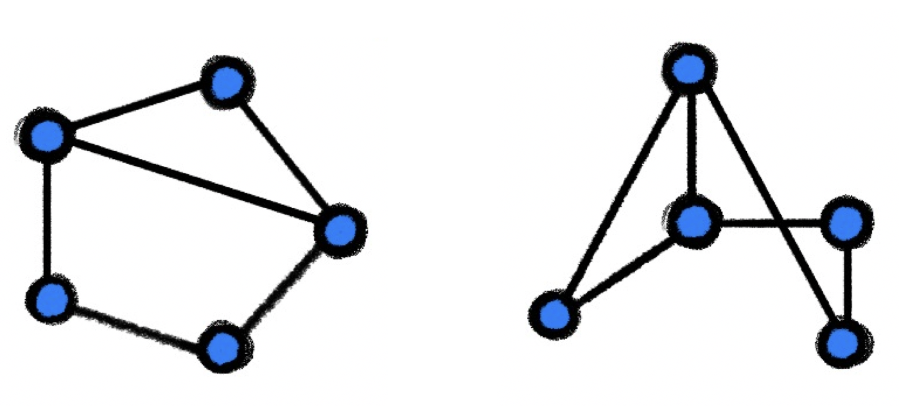
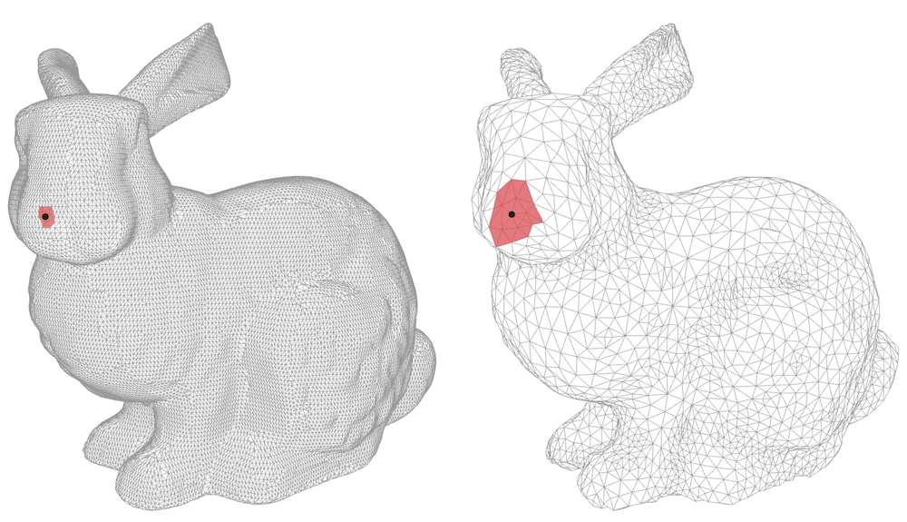

Geometric Deep Learning
Grids, Groups, Graphs,
Geodesics, and Gauges
March 4, 2025
1 Imperial College London / USI IDSIA / Twitter
2 New York University
3 Qualcomm AI Research. Qualcomm AI Research is an initiative of Qualcomm Technologies, Inc.
4 DeepMind
Contents
Preface
For nearly two millenia since Euclid’s Elements, the word According to a popular belief, the Erlangen Programme was delivered in Klein’s inaugural address in October 1872. Klein indeed gave such a talk (though on December 7 of the same year), but it was for a non-mathematical audience and concerned primarily his ideas of mathematical education. What is now called the ‘Erlangen Programme’ was actually a research prospectus brochure Vergleichende Betrachtungen über neuere geometrische Forschungen (“A comparative review of recent researches in geometry”) he prepared as part of his professor appointment. See ?. ‘geometry’ has been synonymous with Euclidean geometry, as no other types of geometry existed. Euclid’s monopoly came to an end in the nineteenth century, with examples of non-Euclidean geometries constructed by Lobachevesky, Bolyai, Gauss, and Riemann. Towards the end of that century, these studies had diverged into disparate fields, with mathematicians and philosophers debating the validity of and relations between these geometries as well as the nature of the “one true geometry”.
A way out of this pickle was shown by a young mathematician Felix Klein, appointed in 1872 as professor in the small Bavarian University of Erlangen. In a research prospectus, which entered the annals of mathematics as the Erlangen Programme, Klein proposed approaching geometry as the study of invariants, i.e. properties unchanged under some class of transformations, called the symmetries of the geometry. This approach created clarity by showing that various geometries known at the time could be defined by an appropriate choice of symmetry transformations, formalized using the language of group theory. For instance, Euclidean geometry is concerned with lengths and angles, because these properties are preserved by the group of Euclidean transformations (rotations and translations), while affine geometry studies parallelism, which is preserved by the group of affine transformations. The relation between these geometries is immediately apparent when considering the respective groups, because the Euclidean group is a subgroup of the affine group, which in turn is a subgroup of the group of projective transformations.
The impact of the Erlangen Programme on geometry was very profound. Furthermore, it spilled to other fields, especially physics, where symmetry principles allowed to derive conservation laws from first principles of symmetry (an astonishing result known as Noether’s Theorem), and even enabled the classification of elementary particles as irreducible representations of the symmetry group. Category theory, now pervasive in pure mathematics, can be “regarded as a continuation of the Klein Erlangen Programme, in the sense that a geometrical space with its group of transformations is generalized to a category with its algebra of mappings”, in the words of its creators Samuel Eilenber and Saunders Mac Lane. See ?.
At the time of writing, the state of the field of deep learning is somewhat reminiscent of the field of geometry in the nineteenth century. There is a veritable zoo of neural network architectures for various kinds of data, but few unifying principles. As in times past, this makes it difficult to understand the relations between various methods, inevitably resulting in the reinvention and re-branding of the same concepts in different application domains. For a novice trying to learn the field, absorbing the sheer volume of redundant ideas is a true nightmare.
In this text, we make a modest attempt to apply the Erlangen Programme mindset to the domain of deep learning, with the ultimate goal of obtaining a systematisation of this field and ‘connecting the dots’. We call this geometrisation attempt ‘Geometric Deep Learning’, and true to the spirit of Felix Klein, propose to derive different inductive biases and network architectures implementing them from first principles of symmetry and invariance. In particular, we focus on a large class of neural networks designed for analysing unstructured sets, grids, graphs, and manifolds, and show that they can be understood in a unified manner as methods that respect the structure and symmetries of these domains.
We believe this text would appeal to a broad audience of deep learning researchers, practitioners, and enthusiasts. A novice may use it as an overview and introduction to Geometric Deep Learning. A seasoned deep learning expert may discover new ways of deriving familiar architectures from basic principles and perhaps some surprising connections. Practitioners may get new insights on how to solve problems in their respective fields.
With such a fast-paced field as modern machine learning, the risk of writing a text like this is that it becomes obsolete and irrelevant before it sees the light of day. Having focused on foundations, our hope is that the key concepts we discuss will transcend their specific realisations“The knowledge of certain principles easily compensates the lack of knowledge of certain facts.” (?) — or, as Claude Adrien Helvétius put it, “la connaissance de certains principes supplée facilement à la connoissance de certains faits.”
Notation
| \(\Omega ,u\) |
Domain, point on domain |
| \(x(u) \in \mathcal {X}(\Omega ,\mathcal {C})\) |
Signal on the domain of the form \(x:\Omega \rightarrow \mathcal {C}\) |
| \(f(x) \in \mathcal {F}(\mathcal {X}(\Omega ))\) |
Functions on signals on the domain of the form \(f:\mathcal {X}(\Omega ) \rightarrow \mathcal {Y}\) |
| \(\fG ,\fg \) |
Group, element of the group |
| \(\fg .u, \rho (\fg )\) |
Group action, group representation |
| \(\vec {X}\in \mathcal {C}^{|\Omega |\times s}\) |
Matrix representing a signal on a discrete domain |
| \(\vec {x}_u\in \mathcal {C}^{s}\) |
Vector representing a discrete domain signal \(\vec {X}\) on element \(u\in \Omega \) |
| \(x_{uj}\in \mathcal {C}\) |
Scalar representing the \(j\)th component of a discrete domain signal \(\vec {X}\) on element \(u\in \Omega \) |
| \(\vec {F}(\vec {X})\) |
Function on discrete domain signals that returns another discrete domain signal, as a matrix |
| \(\tau :\Omega \rightarrow \Omega \) |
Automorphism of the domain |
| \(\eta :\Omega \rightarrow \Omega '\) |
Isomorphism between two different domains |
| \(\sigma : \mathcal {C}\rightarrow \mathcal {C}'\) |
Activation function (point-wise non-linearity) |
| \(G=(\mathcal {V},\mathcal {E})\) |
Graph with nodes \(\mathcal {V}\) and edges \(\mathcal {E}\) |
| \(\mathcal {T}=(\mathcal {V},\mathcal {E},\mathcal {F})\) |
Mesh with nodes \(\mathcal {V}\), edges \(\mathcal {E}\), and faces \(\mathcal {F}\) |
| \(x\star \theta \) |
Convolution with filter \(\theta \) |
| \(S_v\) |
Shift operator |
| \(\varphi _i\) |
Basis function |
| \(T_u\Omega , T\Omega \) |
Tangent space at \(u\), tangent bundle |
| \(X \in T_u\Omega \) |
Tangent vector |
| \(g_u(X,Y) = \langle X, Y\rangle _u\) |
Riemannian metric |
| \(\ell (\gamma ), \ell _{uv}\) |
Length of a curve \(\gamma \), discrete metric on edge \((u,v)\) |
1 Introduction
The last decade has witnessed an experimental revolution in data science and machine learning, epitomised by deep learning methods. Indeed, many high-dimensional learning tasks previously thought to be beyond reach – such as computer vision, playing Go, or protein folding – are in fact feasible with appropriate computational scale. Remarkably, the essence of deep learning is built from two simple algorithmic principles: first, the notion of representation or feature learning, whereby adapted, often hierarchical, features capture the appropriate notion of regularity for each task, and second, learning by local gradient-descent, typically implemented as backpropagation.
While learning generic functions in high dimensions is a cursed estimation problem, most tasks of interest are not generic, and come with essential pre-defined regularities arising from the underlying low-dimensionality and structure of the physical world. This text is concerned with exposing these regularities through unified geometric principles that can be applied throughout a wide spectrum of applications.
Exploiting the known symmetries of a large system is a powerful and classical remedy against the curse of dimensionality, and forms the basis of most physical theories. Deep learning systems are no exception, and since the early days researchers have adapted neural networks to exploit the low-dimensional geometry arising from physical measurements, e.g. grids in images, sequences in time-series, or position and momentum in molecules, and their associated symmetries, such as translation or rotation. Throughout our exposition, we will describe these models, as well as many others, as natural instances of the same underlying principle of geometric regularity.
Such a ‘geometric unification’ endeavour in the spirit of the Erlangen Program serves a dual purpose: on one hand, it provides a common mathematical framework to study the most successful neural network architectures, such as CNNs, RNNs, GNNs, and Transformers. On the other, it gives a constructive procedure to incorporate prior physical knowledge into neural architectures and provide principled way to build future architectures yet to be invented.
Before proceeding, it is worth noting that our work concerns representation learning architectures and exploiting the symmetries of data therein. The many exciting pipelines where such representations may be used (such as self-supervised learning, generative modelling, or reinforcement learning) are not our central focusThe same applies for techniques used for optimising or regularising our architectures, such as Adam (?), dropout (?) or batch normalisation (?).. Hence, we will not review in depth influential neural pipelines such as variational autoencoders (?), generative adversarial networks (?), normalising flows (?), deep Q-networks (?), proximal policy optimisation (?), or deep mutual information maximisation (?). That being said, we believe that the principles we will focus on are of significant importance in all of these areas.
Further, while we have attempted to cast a reasonably wide net in order to illustrate the power of our geometric blueprint, our work does not attempt to accurately summarise the entire existing wealth of research on Geometric Deep Learning. Rather, we study several well-known architectures in-depth in order to demonstrate the principles and ground them in existing research, with the hope that we have left sufficient references for the reader to meaningfully apply these principles to any future geometric deep architecture they encounter or devise.
2 Learning in High Dimensions
Supervised machine learning, in its simplest formalisation, considers a set of \(N\) observations \(\gD =\{(x_i, y_i)\}_{i=1}^{ N}\) drawn i.i.d. from an underlying data distribution \(P\) defined over \(\gX \times \gY \), where \(\gX \) and \(\gY \) are respectively the data and the label domains. The defining feature in this setup is that \(\gX \) is a high-dimensional space: one typically assumes \(\gX = \R ^d\) to be a Euclidean space of large dimension \(d\).
Let us further assume that the labels \(y\) are generated by an unknown function \(f\), such that \(y_i = f(x_i)\), and the learning problem reduces to estimating the function \(f\) using a parametrised function class \(\gF =\{ f_{\thetab \in \Theta }\}\). Neural networks are a common realisation of such parametric function classes, in which case \(\thetab \in \Theta \) corresponds to the network weights. In this idealised setup, there is no noise in the labels, and modern deep learning systems typically operate in the so-called interpolating regime, where the estimated \(\tilde {f} \in \gF \) satisfies \(\tilde {f}(x_i) = f(x_i)\) for all \(i=1,\hdots , N\). The performance of a learning algorithm is measured in terms of the expected performance Statistical learning theory is concerned with more refined notions of generalisation based on concentration inequalities; we will review some of these in future work. on new samples drawn from \(P\), using some loss \(L(\cdot ,\cdot )\)
\[\gR (\tilde {f}):= \mathbb {E}_{P}\,\, L(\tilde {f}(x), f(x)),\]
with the squared-loss \(L(y,y')=\frac {1}{2}|y-y'|^2\) being among the most commonly used ones.
A successful learning scheme thus needs to encode the appropriate notion of regularity or inductive bias for \(f\), imposed through the construction of the function class \(\mathcal {F}\) and the use of regularisation. We briefly introduce this concept in the following section.
2.1 Inductive Bias via Function Regularity
Modern machine learning operates with large, high-quality datasets, which, together with appropriate computational resources, motivate the design of rich function classes \(\gF \) with the capacity to interpolate such large data. This mindset plays well
with neural networks, since even the simplest choices of architecture yields a dense class of functions.A set \(\mathcal {A}\subset \mathcal {X}\) is said to be dense in \(\mathcal {X}\) if its closure
\[ \mathcal {A}\cup \{ \displaystyle \lim _{i\rightarrow \infty } a_i : a_i \in \mathcal {A}\} = \mathcal {X}. \]
This implies that any point in \(\mathcal {X}\) is arbitrarily close to a point in \(\mathcal {A}\). A typical Universal Approximation result shows that the class of functions represented e.g. by a two-layer perceptron, \(f(\mathbf {x}) = \mathbf
{c}^\top \mathrm {sign}(\mathbf {A}\mathbf {x}+\mathbf {b})\) is dense in the space of continuous functions on \(\mathbb {R}^d\). The capacity to approximate almost arbitrary functions is the subject of various Universal
Approximation Theorems; several such results were proved and popularised in the 1990s by applied mathematicians and computer scientists (see e.g. ??????).
Universal Approximation, however, does not imply an absence of inductive bias. Given a hypothesis space \(\gF \) with universal approximation, we can define a complexity measure \(c: \gF \to \R _{+}\) and redefine our interpolation problem as
\[ \tilde {f} \in \arg \min _{g \in \gF } c(g) \quad \mathrm {s.t.} \quad g(x_i) = f(x_i) \quad \mathrm {for} \,\,\, i=1, \hdots , N, \]
i.e., we are looking for the most regular functions within our hypothesis class. For standard function spaces, this complexity measure can be defined as a norm, Informally, a norm \(\|x\|\) can be regarded as a “length” of vector \(x\). A Banach space is a complete vector space equipped with a norm. making \(\gF \) a Banach space and allowing to leverage a plethora of theoretical results in functional analysis. In low dimensions, splines are a workhorse for function approximation. They can be formulated as above, with a norm capturing the classical notion of smoothness, such as the squared-norm of second-derivatives \(\int _{-\infty }^{+\infty } |f''(x)|^2 \mathrm {d}x\) for cubic splines.
In the case of neural networks, the complexity measure \(c\) can be expressed in terms of the network weights, i.e. \(c(f_{\boldsymbol {\theta }}) = {c}(\boldsymbol {\theta })\). The \(L_2\)-norm of the network weights, known as weight decay, or the so-called path-norm (?) are popular choices in deep learning literature. From a Bayesian perspective, such complexity measures can also be interpreted as the negative log of the prior for the function of interest. More generally, this complexity can be enforced explicitly by incorporating it into the empirical loss (resulting in the so-called Structural Risk Minimisation), or implicitly, as a result of a certain optimisation scheme. For example, it is well-known that gradient-descent on an under-determined least-squares objective will choose interpolating solutions with minimal \(L_2\) norm. The extension of such implicit regularisation results to modern neural networks is the subject of current studies (see e.g. ????). All in all, a natural question arises: how to define effective priors that capture the expected regularities and complexities of real-world prediction tasks?
2.2 The Curse of Dimensionality
While interpolation in low-dimensions (with \(d=1,2\) or \(3\)) is a classic signal processing task with very precise mathematical control of estimation errors using increasingly sophisticated regularity classes (such as spline interpolants, wavelets, curvelets, or ridgelets), the situation for high-dimensional problems is entirely different.
In order to convey the essence of the idea, let us consider a classical notion of regularity that can be easily extended to high dimensions: 1-Lipschitz- functions \(f:\mathcal {X} \to \R \), i.e. functions satisfying \(|f(x) - f(x')| \leq \|x - x'\|\) for all \(x, x' \in \mathcal {X}\). This hypothesis only asks the target function to be locally smooth, i.e., if we perturb the input \(x\) slightly (as measured by the norm \(\|x - x'\|\)), the output \(f(x)\) is not allowed to change much. If our only knowledge of the target function \(f\) is that it is \(1\)-Lipschitz, how many observations do we expect to require to ensure that our estimate \(\tilde {f}\) will be close to \(f\)? Figure 2 reveals that the general answer is necessarily exponential in the dimension \(d\), signaling that the Lipschitz class grows ‘too quickly’ as the input dimension increases: in many applications with even modest dimension \(d\), the number of samples would be bigger than the number of atoms in the universe. The situation is not better if one replaces the Lipschitz class by a global smoothness hypothesis, such as the Sobolev Class \(\gH ^{s}(\Omega _d)\)A function \(f\) is in the Sobolev class \(\gH ^{s}(\Omega _d)\) if \(f \in L^2(\Omega _d)\) and the generalised \(s\)-th order derivative is square-integrable: \(\int |\omega |^{2s+1} |\hat {f}(\omega )|^2 d\omega < \infty \), where \(\hat {f}\) is the Fourier transform of \(f\); see Section 4.2. . Indeed, classic results (?) establish a minimax rate of approximation and learning for the Sobolev class of the order \(\epsilon ^{-d/s}\), showing that the extra smoothness assumptions on \(f\) only improve the statistical picture when \(s \propto d\), an unrealistic assumption in practice.
Figure 2: We consider a Lipschitz function \(f(x) = \sum _{j=1}^{2^d} z_j \phi (x-x_j)\) where \(z_j=\pm 1\), \(x_j \in \R ^d\) is placed in each quadrant, and \(\phi \) a locally supported Lipschitz ‘bump’. Unless we observe the function in most of the \(2^d\) quadrants, we will incur in a constant error in predicting it. This simple geometric argument can be formalised through the notion of Maximum Discrepancy (?), defined for the Lipschitz class as \(\kappa (d)=\mathbb {E}_{x,x'} \sup _{f \in \mathrm {Lip}(1)} \left | \frac {1}{N}\sum _{l} f(x_l) - \frac {1}{N}\sum _{l} f(x'_l) \right | \simeq N^{-1/d}\), which measures the largest expected discrepancy between two independent \(N\)-sample expectations. Ensuring that \(\kappa (d) \simeq \epsilon \) requires \(N = \Theta (\epsilon ^{-d})\); the corresponding sample \(\{x_l\}_l\) defines an \(\epsilon \)-net of the domain. For a \(d\)-dimensional Euclidean domain of diameter \(1\), its size grows exponentially as \(\epsilon ^{-d}\).
Fully-connected neural networks define function spaces that enable more flexible notions of regularity, obtained by considering complexity functions \(c\) on their weights. In particular, by choosing a sparsity-promoting regularisation, they have the ability to break this curse of dimensionality (?). However, this comes at the expense of making strong assumptions on the nature of the target function \(f\), such as that \(f\) depends on a collection of low-dimensional projections of the input (see Figure 3). In most real-world applications (such as computer vision, speech analysis, physics, or chemistry), functions of interest tend to exhibits complex long-range correlations that cannot be expressed with low-dimensional projections (Figure 3), making this hypothesis unrealistic. It is thus necessary to define an alternative source of regularity, by exploiting the spatial structure of the physical domain and the geometric priors of \(f\), as we describe in the next Section 3.
Figure 3: If the unknown function \(f\) is presumed to be well approximated as \(f(\mathbf {x}) \approx g(\mathbf {A}\mathbf {x})\) for some unknown \(\mathbf {A} \in \mathbb {R}^{k \times d}\) with \(k \ll d\), then shallow neural networks can capture this inductive bias, see e.g. ?. In typical applications, such dependency on low-dimensional projections is unrealistic, as illustrated in this example: a low-pass filter projects the input images to a low-dimensional subspace; while it conveys most of the semantics, substantial information is lost.
3 Geometric Priors
Modern data analysis is synonymous with high-dimensional learning. While the simple arguments of Section 2.1 reveal the impossibility of learning from generic high-dimensional data as a result of the curse of dimensionality, there is hope for physically-structured data, where we can employ two fundamental principles: symmetry and scale separation. In the settings considered in this text, this additional structure will usually come from the structure of the domain underlying the input signals: we will assume that our machine learning system operates on signals (functions) on some domain \(\Omega \). While in many cases linear combinations of points on \(\Omega \) is not well-defined\(\Omega \) must be a vector space in order for an expression \(\alpha u + \beta v\) to make sense., we can linearly combine signals on it, i.e., the space of signals forms a vector space. Moreover, since we can define an inner product between signals, this space is a Hilbert space.
The space of \(\mathcal {C}\)-valued signals on \(\Omega \) When \(\Omega \) has some additional structure, we may further restrict the kinds of signals in \(\mathcal {X}(\Omega , \mathcal {C})\). For example, when \(\Omega \) is a smooth manifold, we may require the signals to be smooth. Whenever possible, we will omit the range \(\mathcal {C}\) for brevity. (for \(\Omega \) a set, possibly with additional structure, and \(\mathcal {C}\) a vector space, whose dimensions are called channels)
\(\seteqnumber{0}{}{0}\)\begin{equation} \mathcal {X}(\Omega , \mathcal {C}) = \{ x : \Omega \rightarrow \mathcal {C} \} \end{equation}
is a function space that has a vector space structure. Addition and scalar multiplication of signals is defined as:
\(\seteqnumber{0}{}{1}\)\begin{equation*} (\alpha x + \beta y)(u) = \alpha x(u) + \beta y(u) \quad \text {for all} \quad u\in \Omega , \end{equation*}
with real scalars \(\alpha , \beta \). Given an inner product \(\langle v, w \rangle _\mathcal {C}\) on \(\mathcal {C}\) and a measureWhen the domain \(\Omega \) is discrete, \(\mu \) can be chosen as the counting measure, in which case the integral becomes a sum. In the following, we will omit the measure and use \(\mathrm {d}u\) for brevity. \(\mu \) on \(\Omega \) (with respect to which we can define an integral), we can define an inner product on \(\mathcal {X}(\Omega , \mathcal {C})\) as
\(\seteqnumber{0}{}{1}\)\begin{equation} \langle x, y \rangle = \int _{\Omega } \langle x(u), \, y(u) \rangle _{\mathcal {C}} \; \mathrm {d}\mu (u). \label {eqn:innerprod} \end{equation}
As a typical illustration, take \(\Omega = \mathbb {Z}_n\times \mathbb {Z}_n\) to be a two-dimensional \(n\times n\) grid, \(x\) an RGB image (i.e. a signal \(x : \Omega \rightarrow \R ^3\)), and \(f\) a function (such as a single-layer Perceptron) operating on \(3n^2\)-dimensional inputs. As we will see in the following with greater detail, the domain \(\Omega \) is usually endowed with certain geometric structure and symmetries. Scale separation results from our ability to preserve important characteristics of the signal when transferring it onto a coarser version of the domain (in our example, subsampling the image by coarsening the underlying grid).
We will show that both principles, to which we will generically refer as geometric priors, are prominent in most modern deep learning architectures. In the case of images considered above, geometric priors are built into Convolutional Neural Networks (CNNs) in the form of convolutional filters with shared weights (exploiting translational symmetry) and pooling (exploiting scale separation). Extending these ideas to other domains such as graphs and manifolds and showing how geometric priors emerge from fundamental principles is the main goal of Geometric Deep Learning and the leitmotif of our text.
3.1 Symmetries, Representations, and Invariance
Informally, a symmetry of an object or system is a transformation that leaves a certain property of said object or system unchanged or invariant. Such transformations may be either smooth, continuous, or discrete. Symmetries are ubiquitous in many machine learning tasks. For example, in computer vision the object category is unchanged by shifts, so shifts are symmetries in the problem of visual object classification. In computational chemistry, the task of predicting properties of molecules independently of their orientation in space requires rotational invariance. Discrete symmetries emerge naturally when describing particle systems where particles do not have canonical ordering and thus can be arbitrarily permuted, as well as in many dynamical systems, via the time-reversal symmetry (such as systems in detailed balance or the Newton’s second law of motion). As we will see in Section 4.1, permutation symmetries are also central to the analysis of graph-structured data.
Symmetry groups The set of symmetries of an object satisfies a number of properties. First, symmetries may be combined to obtain new symmetries: if \(\fg \) and \(\fh \) are two symmetries, then their compositions \(\fg \circ \fh \) and \(\fh \circ \fg \) We will follow the juxtaposition notation convention used in group theory, \(\fg \circ \fh = \fg \fh \), which should be read right-to-left: we first apply \(\fh \) and then \(\fg \). The order is important, as in many cases symmetries are non-commutative. Readers familiar with Lie groups might be disturbed by our choice to use the Fraktur font to denote group elements, as it is a common notation of Lie algebras. are also symmetries. The reason is that if both transformations leave the object invariant, then so does the composition of transformations, and hence the composition is also a symmetry. Furthermore, symmetries are always invertible, and the inverse is also a symmetry. This shows that the collection of all symmetries form an algebraic object known as a group. Since these objects will be a centerpiece of the mathematical model of Geometric Deep Learning, they deserve a formal definition and detailed discussion:
A group is a set \(\fG \) along with a binary operation \(\circ : \fG \times \fG \rightarrow \fG \) called composition (for brevity, denoted by juxtaposition \(\fg \circ \fh = \fg \fh \)) satisfying the following axioms:
Associativity: \((\fg \fh ) \fk = \fg (\fh \fk )\) for all \(\fg , \fh , \fk \in \fG \).
Identity: there exists a unique \(\fe \in \fG \) satisfying \(\fe \fg = \fg \fe = \fg \) for all \(\fg \in \fG \).
Inverse: For each \(\fg \in \fG \) there is a unique inverse \(\fg ^{-1} \in \fG \) such that \(\fg \fg ^{-1} = \fg ^{-1} \fg = \fe \).
Closure: The group is closed under composition, i.e., for every \(\fg , \fh \in \fG \), we have \(\fg \fh \ \in \fG \).
Note that commutativity is not part of this definition, i.e. we may have \(\fg \fh \neq \fh \fg \). Groups for which \(\fg \fh = \fh \fg \) for all \(\fg , \fh \in \fG \) are called commutative or AbelianAfter the Norwegian mathematician Niels Henrik Abel (1802–1829)..
Though some groups can be very large and even infinite, they often arise from compositions of just a few elements, called group generators. Formally, \(\mathfrak {G}\) is said to be generated by a subset \(S \subseteq \mathfrak {G}\) (called the group generator) if every element \(\fg \in \fG \) can be written as a finite composition of the elements of \(S\) and their inverses. For instance, the symmetry group of an equilateral triangle (dihedral group \(\mathrm {D}_3\)) is generated by a \(60^\circ \) rotation and a reflection (Figure 4). The 1D translation group, which we will discuss in detail in the following, is generated by infinitesimal displacements; this is an example of a Lie group of differentiable symmetries.Lie groups have a differentiable manifold structure. One such example that we will study in Section 4.3 is the special orthogonal group \(\mathrm {SO}(3)\), which is a 3-dimensional manifold.
Note that here we have defined a group as an abstract object, without saying what the group elements are (e.g. transformations of some domain), only how they compose. Hence, very different kinds of objects may have the same symmetry group. For instance, the aforementioned group of rotational and reflection symmetries of a triangle is the same as the group of permutations of a sequence of three elements (we can permute the corners in the triangle in any way using a rotation and reflection – see Figure 4)The diagram shown in Figure 4 (where each node is associated with a group element, and each arrow with a generator), is known as the Cayley diagram..
Figure 4: Left: an equilateral triangle with corners labelled by \(1, 2, 3\), and all possible rotations and reflections of the triangle. The group \(\mathrm {D}_3\) of rotation/reflection symmetries of the triangle is generated by only two elements (rotation by \(60^\circ \) R and reflection F) and is the same as the group \(\Sigma _3\) of permutations of three elements. Right: the multiplication table of the group \(\mathrm {D}_3\). The element in the row \(\fg \) and column \(\fh \) corresponds to the element \(\fg \fh \).
Group Actions and Group Representations Rather than considering groups as abstract entities, we are mostly interested in how groups act on data. Since we assumed that there is some domain \(\Omega \) underlying our data, we will study how the group acts on \(\Omega \) (e.g. translation of points of the plane), and from there obtain actions of the same group on the space of signals \(\mathcal {X}(\Omega )\) (e.g. translations of planar images and feature maps).
A group action Technically, what we define here is a left group action. of \(\fG \) on a set \(\Omega \) is defined as a mapping \((\fg , u) \mapsto \fg .u\) associating a group element \(\fg \in \fG \) and a point \(u\in \Omega \) with some other point on \(\Omega \) in a way that is compatible with the group operations, i.e., \(\fg .(\fh .u) = (\fg \fh ).u\) for all \(\fg , \fh \in \fG \) and \(u \in \Omega \). We shall see numerous instances of group actions in the following sections. For example, in the plane the Euclidean group \(\mathrm {E}(2)\) is the group of transformations of \(\R ^2\) that preserves Euclidean distancesDistance-preserving transformations are called isometries. According to Klein’s Erlangen Programme, the classical Euclidean geometry arises from this group., and consists of translations, rotations, and reflections. The same group, however, can also act on the space of images on the plane (by translating, rotating and flipping the grid of pixels), as well as on the representation spaces learned by a neural network. More precisely, if we have a group \(\fG \) acting on \(\Omega \), we automatically obtain an action of \(\fG \) on the space \(\mathcal {X}(\Omega )\):
\(\seteqnumber{0}{}{2}\)\begin{equation} (\fg . x)(u) = x(\fg ^{-1} u). \label {eq:group_action} \end{equation}
Due to the inverse on \(\fg \), this is indeed a valid group action, in that we have \((\fg . (\fh . x))(u) = ((\fg \fh ) . x)(u)\).
The most important kind of group actions, which we will encounter repeatedly throughout this text, are linear group actions, also known as group representations. The action on signals in equation (3) is indeed linear, in the sense that
\[ \fg . (\alpha x + \beta x') = \alpha (\fg . x) + \beta (\fg . x') \]
for any scalars \(\alpha , \beta \) and signals \(x, x' \in \mathcal {X}(\Omega )\). We can describe linear actions either as maps \((\fg , x) \mapsto \fg .x\) that are linear in \(x\), or equivalently, by currying, as a map \(\rho : \fG \rightarrow \R ^{n \times n}\)When \(\Omega \) is infinte, the space of signals \(\mathcal {X}(\Omega )\) is infinite dimensional, in which case \(\rho (\fg )\) is a linear operator on this space, rather than a finite dimensional matrix. In practice, one must always discretise to a finite grid, though. that assigns to each group element \(\fg \) an (invertible) matrix \(\rho (\fg )\). The dimension \(n\) of the matrix is in general arbitrary and not necessarily related to the dimensionality of the group or the dimensionality of \(\Omega \), but in applications to deep learning \(n\) will usually be the dimensionality of the feature space on which the group acts. For instance, we may have the group of 2D translations acting on a space of images with \(n\) pixels.
As with a general group action, the assignment of matrices to group elements should be compatible with the group action. More specifically, the matrix representing a composite group element \(\fg \fh \) should equal the matrix product of the representation of \(\fg \) and \(\fh \):
A \(n\)-dimensional real representation of a group \(\fG \) is a map \(\rho : \fG \rightarrow \R ^{n \times n}\), assigning to each \(\fg \in \fG \) an invertible matrix \(\rho (\fg )\), and satisfying the condition \(\rho (\fg \fh ) = \rho (\fg ) \rho (\fh )\) for all \(\fg , \fh \in \fG \). Similarly, a complex representation is a map \(\rho : \fG \rightarrow \mathbb {C}^{n \times n}\) satisfying the same equation. A representation is called unitary or orthogonal if the matrix \(\rho (\fg )\) is unitary or orthogonal for all \(\fg \in \fG \).
Written in the language of group representations, the action of \(\fG \) on signals \(x \in \mathcal {X}(\Omega )\) is defined as \(\rho (\fg ) x(u) = x(\fg ^{-1} u)\). We again verify that
\[ (\rho (\fg ) (\rho (\fh ) x))(u) = (\rho (\fg \fh ) x)(u). \]
Figure 5: Three spaces of interest in Geometric Deep Learning: the (physical) domain \(\Omega \), the space of signals \(\mathcal {X}(\Omega )\), and the hypothesis class \(\mathcal {F}(\mathcal {X}(\Omega ))\). Symmetries of the domain \(\Omega \) (captured by the group \(\fG \)) act on signals \(x\in \mathcal {X}(\Omega )\) through group representations \(\rho (\fg )\), imposing structure on the functions \(f\in \mathcal {F}(\mathcal {X}(\Omega ))\) acting on such signals.
Invariant and Equivariant functions
The symmetry of the domain \(\Omega \) underlying the signals \(\mathcal {X}(\Omega )\) imposes structure on the function \(f\) defined on such signals. It turns out to be a powerful inductive bias, improving learningIn general, \(f\) depends both on the signal an the domain, i.e., \(\mathcal {F}(\mathcal {X}(\Omega ), \Omega )\). We will often omit the latter dependency for brevity. efficiency by reducing the space of possible interpolants, \(\mathcal {F}(\mathcal {X}(\Omega ))\), to those which satisfy the symmetry priors. Two important cases we will be exploring in this text are invariant and equivariant functions.
A function \(f: \mathcal {X}(\Omega ) \rightarrow \mathcal {Y}\) is \(\fG \)-invariant if \(f(\rho (\fg )x) = f(x)\) for all \(\fg \in \fG \) and \(x \in \mathcal {X}(\Omega )\), i.e., its output is unaffected by the group action on the input.
A classical example of invariance is shift-invariance,Note that signal processing books routinely use the term ‘shift-invariance’ referring to shift-equivariance, e.g. Linear Shift-invariant Systems. arising in computer vision and pattern recognition applications such as image classification. The function \(f\) in this case (typically implemented as a Convolutional Neural Network) inputs an image and outputs the probability of the image to contain an object from a certain class (e.g. cat or dog). It is often reasonably assumed that the classification result should not be affected by the position of the object in the image, i.e., the function \(f\) must be shift-invariant. Multi-layer Perceptrons, which can approximate any smooth function, do not have this property – one of the reasons why early attempts to apply these architectures to problems of pattern recognition in the 1970s failed. The development of neural network architectures with local weight sharing, as epitomised by Convolutional Neural Networks, was, among other reasons, motivated by the need for shift-invariant object classification.
If we however take a closer look at the convolutional layers of CNNs, we will find that they are not shift-invariant but shift-equivariant: in other words, a shift of the input to a convolutional layer produces a shift in the output feature maps by the same amount.
A function \(f: \mathcal {X}(\Omega ) \rightarrow \mathcal {X}(\Omega )\) is \(\fG \)-equivariant if More generally, we might have \(f: \mathcal {X}(\Omega ) \rightarrow \mathcal {X}(\Omega ')\) with input and output spaces having different domains \(\Omega , \Omega '\) and representations \(\rho \), \(\rho '\) of the same group \(\fG \). In this case, equivariance is defined as \(f(\rho (\fg )x) = \rho '(\fg ) f(x)\). \(f(\rho (\fg )x) = \rho (\fg ) f(x)\) for all \(\fg \in \fG \), i.e., group action on the input affects the output in the same way.
Resorting again to computer vision, a prototypical application requiring shift-equivariance is image segmentation, where the output of \(f\) is a pixel-wise image mask. Obviously, the segmentation mask must follow shifts in the input image. In this example, the domains of the input and output are the same, but since the input has three color channels while the output has one channel per class, the representations \((\rho , \mathcal {X}(\Omega , \mathcal {C}))\) and \((\rho ', \mathcal {X}(\Omega , \mathcal {C}'))\) are somewhat different.
However, even the previous use case of image classification is usually implemented as a sequence of convolutional (shift-equivariant) layers, followed by global pooling (which is shift-invariant). As we will see in Section 3.5, this is a general blueprint of a majority of deep learning architectures, including CNNs and Graph Neural Networks (GNNs).
3.2 Isomorphisms and Automorphisms
Subgroups and Levels of structure
As mentioned before, a symmetryInvertible and structure-preserving maps between different objects often go under the generic name of isomorphisms (Greek for ‘equal shape’). An isomorphism from an object to itself is called an automorphism, or symmetry. is a transformation that preserves some property or structure, and the set of all such transformations for a given structure forms a symmetry group. It happens often that there is not one but multiple structures of interest, and so we can consider several levels of structure on our domain \(\Omega \). Hence, what counts as a symmetry depends on the structure under consideration, but in all cases a symmetry is an invertible map that respects this structure.
On the most basic level, the domain \(\Omega \) is a set, which has a minimal amount of structure: all we can say is that the set has some cardinalityFor a finite set, the cardinality is the number of elements (‘size’) of the set, and for infinite sets the cardinality indicates different kinds of infinities, such as the countable infinity of the natural numbers, or the uncountable infinity of the continuum \(\R \).. Self-maps that preserve this structure are bijections (invertible maps), which we may consider as set-level symmetries. One can easily verify that this is a group by checking the axioms: a compositions of two bijections is also a bijection (closure), the associativity stems from the associativity of the function composition, the map \(\tau (u)=u\) is the identity element, and for every \(\tau \) the inverse exists by definition, satisfying \((\tau \circ \tau ^{-1})(u) = (\tau ^{-1} \circ \tau )(u) =u\).
Depending on the application, there may be further levels of structure. For instance, if \(\Omega \) is a topological space, we can consider maps that preserve continuity: such maps are called homeomorphisms and in addition to simple bijections between sets, are also continuous and have continuous inverse. Intuitively, continuous functions are well-behaved and map points in a neighbourhood (open set) around a point \(u\) to a neighbourhood around \(\tau (u)\).
One can further demand that the map and its inverse are (continuously) differentiable,Every differentiable function is continuous. If the map is continuously differentiable ‘sufficiently many times’, it is said to be smooth. i.e., the map and its inverse have a derivative at every point (and the derivative is also continuous). This requires further differentiable structure that comes with differentiable manifolds, where such maps are called diffeomorphisms and denoted by \(\mathrm {Diff}(\Omega )\). Additional examples of structures we will encounter include distances or metrics (maps preserving them are called isometries) or orientation (to the best of our knowledge, orientation-preserving maps do not have a common Greek name).
A metric or distance is a function \(d:\Omega \times \Omega \rightarrow [0,\infty )\) satisfying for all \(u,v,w \in \Omega \):
Identity of indiscernibles: \(d(u,v) =0\) iff \(u=v\).
Symmetry: \(d(u,v) = d(v,u)\).
Triangle inequality: \(d(u,v) \leq d(u,w) + d(w,v)\).
A space equipped with a metric \((\Omega ,d)\) is called a metric space.
The right level of structure to consider depends on the problem. For example, when segmenting histopathology slide images, we may wish to consider flipped versions of an image as equivalent (as the sample can be flipped when put under the microscope), but if we are trying to classify road signs, we would only want to consider orientation-preserving transformations as symmetries (since reflections could change the meaning of the sign).
As we add levels of structure to be preserved, the symmetry group will get smaller. Indeed, adding structure is equivalent to selecting a subgroup, which is a subset of the larger group that satisfies the axioms of a group by itself:
Let \((\fG ,\circ )\) be a group and \(\mathfrak {H} \subseteq \fG \) a subset. \(\mathfrak {H}\) is said to be a subgroup of \(\fG \) if \((\mathfrak {H},\circ )\) constitutes a group with the same operation.
For instance, the group of Euclidean isometries \(\E {2}\) is a subgroup of the group of planar diffeomorphisms \(\diff {2}\), and in turn the group of orientation-preserving isometries \(\SE {2}\) is a subgroup of \(\E {2}\). This hierarchy of structure follows the Erlangen Programme philosophy outlined in the Preface: in Klein’s construction, the Projective, Affine, and Euclidean geometries have increasingly more invariants and correspond to progressively smaller groups.
Isomorphisms and Automorphisms
We have described symmetries as structure preserving and invertible maps from an object to itself. Such maps are also known as automorphisms, and describe a way in which an object is equivalent it itself. However, an equally important class of maps are the so-called isomorphisms, which exhibit an equivalence between two non-identical objects. These concepts are often conflated, but distinguishing them is necessary to create clarity for our following discussion.
To understand the difference, consider a set \(\Omega = \{0,1,2\}\). An automorphism of the set \(\Omega \) is a bijection \(\tau : \Omega \rightarrow \Omega \) such as a cyclic shift \(\tau (u) = u + 1 \mod 3\). Such a map preserves the cardinality property, and maps \(\Omega \) onto itself. If we have another set \(\Omega ' = \{a, b, c\}\) with the same number of elements, then a bijection \(\eta : \Omega \rightarrow \Omega '\) such as \(\eta (0) = a\), \(\eta (1) = b\), \(\eta (2) = c\) is a set isomorphism.
As we will see in Section 4.1 for graphs, the notion of structure includes not just the number of nodes, but also the connectivity. An isomorphism \(\eta : \mathcal {V} \rightarrow \mathcal
{V}'\) between two graphs \(\mathcal {G}=(\mathcal {V},\mathcal {E})\) and \(\mathcal {G}'=(\mathcal {V}',\mathcal {E}')\) is thus a bijection between the nodes that maps pairs of connected nodes to pairs of
connected nodes, and likewise for pairs of non-connected nodes.I.e., \((\eta (u),\eta (v)) \in \mathcal {V}'\) iff \((u,v) \in \mathcal {V}\). Two isomorphic graphs are thus structurally
identical, and differ only in the way their nodes are ordered.
The Folkman graph (?) is a beautiful example of a graph with 3840 automorphisms, exemplified by the many symmetric ways to draw it. On the other hand, a graph automorphism or symmetry is a map \(\tau : \mathcal {V}
\rightarrow \mathcal {V}\) maps the nodes of the graph back to itself, while preserving the connectivity. A graph with a non-trivial automorphism (i.e., \(\tau \neq \mathrm {id}\)) presents symmetries.
3.3 Deformation Stability
The symmetry formalism introduced in Sections 3.1–3.2 captures an idealised world where we know exactly which transformations are to be considered as symmetries, and we want to respect these symmetries exactly. For instance in computer vision, we might assume that planar translations are exact symmetries. However, the real world is noisy and this model falls short in two ways.
Two objects moving at different velocities in a video define a transformation outside the translation group. Firstly, while these simple groups provide a way to understand global symmetries of the domain \(\Omega \) (and by extension, of signals on it, \(\gX (\Omega )\)), they do not capture local symmetries well. For instance, consider a video scene with several objects, each moving along its own different direction. At subsequent frames, the resulting scene will contain approximately the same semantic information, yet no global translation explains the transformation from one frame to another. In other cases, such as a deformable 3D object viewed by a camera, it is simply very hard to describe the group of transformations that preserve the object identity. These examples illustrate that in reality we are more interested in a far larger set of transformations where global, exact invariance is replaced by a local, inexact one. In our discussion, we will distinguish between two scenarios: the setting where the domain \(\Omega \) is fixed, and signals \(x \in \gX (\Omega )\) are undergoing deformations, and the setting where the domain \(\Omega \) itself may be deformed.
Stability to signal deformations In many applications, we know a priori that a small deformation of the signal \(x\) should not change the output of \(f(x)\), so it is tempting to consider such deformations as symmetries. For instance, we could view small diffeomorphisms \(\tau \in \diff {\Omega }\), or even small bijections, as symmetries. However, small deformations can be composed to form large deformations, so “small deformations” do not form a group,E.g., the composition of two \(\epsilon \)-isometries is a \(2\epsilon \)-isometry, violating the closure property. and we cannot ask for invariance or equivariance to small deformations only. Since large deformations can can actually materially change the semantic content of the input, it is not a good idea to use the full group \(\diff {\Omega }\) as symmetry group either.
A better approach is to quantify how “far” a given \(\tau \in \diff {\Omega }\) is from a given symmetry subgroup \(\fG \subset \diff {\Omega }\) (e.g. translations) with a complexity measure \(c(\tau )\), so that \(c(\tau ) = 0\) whenever \(\tau \in \fG \). We can now replace our previous definition of exact invariance and equivarance under group actions with a ‘softer’ notion of deformation stability (or approximate invariance):
\(\seteqnumber{0}{}{3}\)\begin{equation} \label {eq:defstability1} \| f(\rho (\tau ) x) - f(x)\| \leq C c(\tau ) \|x\|,~,~ \forall x\in \gX (\Omega ) \end{equation}
where \(\rho (\tau )x(u) = x(\tau ^{-1} u)\) as before, and where \(C\) is some constant independent of the signal \(x\). A function \(f\in \mathcal {F}(\mathcal {X}(\Omega ))\) satisfying the above equation is said to be geometrically stable. We will see examples of such functions in the next Section 3.4.
Since \(c(\tau )=0\) for \(\tau \in \fG \), this definition generalises the \(\fG \)-invariance property defined above. Its utility in applications depends on introducing an appropriate deformation cost. In the case of images defined over a continuous Euclidean plane, a popular choice is \(c^2(\tau ) := \int _\Omega \| \nabla \tau (u)\|^2 \mathrm {d}u\), which measures the ‘elasticity’ of \(\tau \), i.e., how different it is from the displacement by a constant vector field. This deformation cost is in fact a norm often called the Dirichlet energy, and can be used to quantify how far \(\tau \) is from the translation group.
Figure 6: The set of all bijective mappings from \(\Omega \) into itself forms the set automorphism group \(\mathrm {Aut}(\Omega )\), of which a symmetry group \(\fG \) (shown as a circle) is a subgroup. Geometric Stability extends the notion of \(\fG \)-invariance and equivariance to ‘transformations around \(\fG \)’ (shown as gray ring), quantified in the sense of some metric between transformations. In this example, a smooth distortion of the image is close to a shift.
Stability to domain deformations In many applications, the object being deformed is not the signal, but the geometric domain \(\Omega \) itself. Canonical instances of this are applications dealing with graphs and manifolds: a graph can model a social network at different instance of time containing slightly different social relations (follow graph), or a manifold can model a 3D object undergoing non-rigid deformations. This deformation can be quantified as follows. If \(\mathcal {D}\) denotes the space of all possible variable domains (such as the space of all graphs, or the space of Riemannian manifolds), one can define for \(\Omega , \tilde {\Omega } \in \mathcal {D}\) an appropriate metric (‘distance’) \(d(\Omega , \tilde {\Omega })\) satisfying \(d(\Omega ,\tilde {\Omega })=0\) if \(\Omega \) and \(\tilde {\Omega }\) are equivalent in some sense: for example, the graph edit distance vanishes when the graphs are isomorphic, and the Gromov-Hausdorff distance between Riemannian manifolds equipped with geodesic distances vanishes when two manifolds are isometric.The graph edit distance measures the minimal cost of making two graphs isomorphic by a sequences of graph edit operations. The Gromov-Hausdorff distance measures the smallest possible metric distortion of a correspondence between two metric spaces, see ?.
A common construction of such distances between domains relies on some family of invertible mapping \(\eta : \Omega \to \tilde {\Omega }\) that try to ‘align’ the domains in a way that the corresponding structures are best preserved. For example, in the case of graphs or Riemannian manifolds (regarded as metric spaces with the geodesic distance), this alignment can compare pair-wise adjacency or distance structures (\(d\) and \(\tilde {d}\), respectively),
\[d_{\gD }(\Omega , \tilde {\Omega }) = \inf _{\eta \in \fG }\|d - \tilde {d}\circ (\eta \times \eta )\|\]
where \(\fG \) is the group of isomorphisms such as bijections or isometries, and the norm is defined over the product space \(\Omega \times \Omega \). In other words, a distance between elements of \(\Omega ,\tilde {\Omega }\) is ‘lifted’ to a distance between the domains themselves, by accounting for all the possible alignments that preserve the internal structure. Two graphs can be aligned by the Quadratic Assignment Problem (QAP), which considers in its simplest form two graphs \(G,\tilde {G}\) of the same size \(n\), and solves \(\min _{\mathbf {P} \in \Sigma _n} \mathrm {trace}(\mathbf {A P \tilde {A} P}^\top )\), where \(\mathbf {A}, \tilde {\mathbf {A}}\) are the respective adjacency matrices and \(\Sigma _n\) is the group of \(n \times n\) permutation matrices. The graph edit distance can be associated with such QAP (?). Given a signal \(x \in \gX (\Omega )\) and a deformed domain \(\tilde {\Omega }\), one can then consider the deformed signal \(\tilde {x} = x \circ \eta ^{-1} \in \gX (\tilde {\Omega })\).
By slightly abusing the notation, we define \(\gX (\mathcal {D}) = \{ (\gX (\Omega ), \Omega ) \, : \, \Omega \in \mathcal {D} \}\) as the ensemble of possible input signals defined over a varying domain. A function \(f : \gX (\mathcal {D}) \to \gY \) is stable to domain deformations if
\(\seteqnumber{0}{}{4}\)\begin{equation} \| f( x, \Omega ) - f(\tilde {x}, \tilde {\Omega }) \| \leq C \|x \| d_{\gD }(\Omega , \tilde {\Omega })~ \label {eqn:domain_def_stability} \end{equation}
for all \(\Omega , \tilde {\Omega } \in \mathcal {D}\), and \(x \in \mathcal {X}(\Omega )\). We will discuss this notion of stability in the context of manifolds in Sections 4.4–4.6, where isometric deformations play a crucial role. Furthermore, it can be shown that the stability to domain deformations is a natural generalisation of the stability to signal deformations, by viewing the latter in terms of deformations of the volume form ?.
3.4 Scale Separation
While deformation stability substantially strengthens the global symmetry priors, it is not sufficient in itself to overcome the curse of dimensionality, in the sense that, informally speaking, there are still “too many" functions that respect (4) as the size of the domain grows. A key insight to overcome this curse is to exploit the multiscale structure of physical tasks. Before describing multiscale representations, we need to introduce the main elements of Fourier transforms, which rely on frequency rather than scale.
Fourier Transform and Global invariants Arguably Fourier basis functions have global support. As a result, local signals produce energy across all frequencies. the most famous signal decomposition is the Fourier transform, the cornerstone of harmonic analysis. The classical one-dimensional Fourier transform
\[ \hat {x}(\xi ) = \int _{-\infty }^{+\infty } x(u) e^{-\mi \xi u} \mathrm {d}u \]
expresses the function \(x(u) \in L^2(\Omega )\) on the domain \(\Omega = \mathbb {R}\) as a linear combination of orthogonal oscillating basis functions \(\varphi _\xi (u) = e^{\mi \xi u}\), indexed by their rate of oscillation (or frequency) \(\xi \). Such an organisation into frequencies reveals important information about the signal, e.g. its smoothness and localisation. The Fourier basis itself has a deep geometric foundation and can be interpreted as the natural vibrations of the domain, related to its geometric structure (see e.g. ?).
The Fourier transformIn the following, we will use convolution and (cross-)correlation
\[ (x \, \star \,\theta )(u) = \int _{-\infty }^{+\infty } \hspace {-2mm} x(v)\theta (u+v) \mathrm {d}v \]
interchangeably, as it is common in machine learning: the difference between the two is whether the filter is reflected, and since the filter is typically learnable, the distinction is purely notational. plays a crucial role in signal processing as it offers a
dual formulation of convolution,
\[ (x\star \theta )(u) = \int _{-\infty }^{+\infty } x(v)\theta (u-v) \mathrm {d}v \]
a standard model of linear signal filtering (here and in the following, \(x\) denotes the signal and \(\theta \) the filter). As we will show in the following, the convolution operator is diagonalised in the Fourier basis, making it possible to express convolution as the product of the respective Fourier transforms,
\[ \widehat {(x\star \theta )}(\xi ) = \hat {x}(\xi ) \cdot \hat {\theta }(\xi ), \]
a fact known in signal processing as the Convolution Theorem.
As it turns out, many fundamental differential operators such as the Laplacian are described as convolutions on Euclidean domains. Since such differential operators can be defined intrinsically over very general geometries, this provides a formal procedure to extend Fourier transforms beyond Euclidean domains, including graphs, groups and manifolds. We will discuss this in detail in Section 4.4.
An essential aspect of Fourier transforms is that they reveal global properties of the signal and the domain, such as smoothness or conductance. Such global behavior is convenient in presence of global symmetries of the domain such as translation, but not to study more general diffeomorphisms. This requires a representation that trades off spatial and frequential localisation, as we see next.
Multiscale representations The notion of local invariance can be articulated by switching from a Fourier frequency-based representation to a scale-based representation, the cornerstone of multi-scale decomposition methods such as wavelets.See ? for a comperehensive introduction. The essential insight of multi-scale methods is to decompose functions defined over the domain \(\Omega \) into elementary functions that are localised both in space and frequency. Contrary to Fourier, wavelet atoms are localised and multi-scale, allowing to capture fine details of the signal with atoms having small spatial support and coarse details with atoms having large spatial support. The term atom here is synonymous with ‘basis element’ in Fourier analysis, with the caveat that wavelets are redundant (over-complete). In the case of wavelets, this is achieved by correlating a translated and dilated filter (mother wavelet) \(\psi \), producing a combined spatio-frequency representation called a continuous wavelet transform
\[ (W_\psi x)(u,\xi ) = \xi ^{-1/2} \int _{-\infty }^{+\infty } \psi \left (\frac {v-u}{\xi }\right ) x(v) \mathrm {d}v. \]
The translated and dilated filters are called wavelet atoms; their spatial position and dilation correspond to the coordinates \(u\) and \(\xi \) of the wavelet transform. These coordinates are usually sampled dyadically (\(\xi =2^{-j}\) and \(u = 2^{-j}k\)), with \(j\) referred to as scale. Multi-scale signal representations bring important benefits in terms of capturing regularity properties beyond global smoothness, such as piece-wise smoothness, which made them a popular tool in signal and image processing and numerical analysis in the 90s.
Deformation stability of Multiscale representations: The benefit of multiscale localised wavelet decompositions over Fourier decompositions is revealed when considering the effect of small deformations ‘nearby’ the underlying symmetry group. Let us illustrate this important concept in the Euclidean domain and the translation group. Since the Fourier representation diagonalises the shift operator (which can be thought of as convolution, as we will see in more detail in Section 4.2), it is an efficient representation for translation transformations. However, Fourier decompositions are unstable under high-frequency deformations. In contrast, wavelet decompositions offer a stable representation in such cases.
Indeed, let us consider \(\tau \in \mathrm {Aut}(\Omega )\) and its associated linear representation \(\rho (\tau )\). When \(\tau (u) = u - v\) is a shift, as we will verify in Section 4.2, the operator \(\rho (\tau ) = S_v\) is a shift operator that commutes with convolution. Since convolution operators are diagonalised by the Fourier transform, the action of shift in the frequency domain amounts to shifting the complex phase of the Fourier transform,
\[ (\widehat {S_v x})(\xi ) = e^{-\mi \xi v} \hat {x}(\xi ). \]
Thus, the Fourier modulus \(f(x) = |\hat {x}|\) removing the complex phase is a simple shift-invariant function, \(f(S_v x) = f(x)\). However, if we have only approximate translation, \(\tau (u) = u - \tilde {\tau }(u)\) with \(\|\nabla \tau \|_\infty = \sup _{u\in \Omega } \| \nabla \tilde {\tau }(u)\| \leq \epsilon \), the situation is entirely different: it is possible to show that
\[ \frac {\|f(\rho (\tau ) x) - f(x) \| }{ \|x\| }= \mathcal {O}(1) \]
irrespective of how small \(\epsilon \) is (i.e., how close is \(\tau \) to being a shift). Consequently, such Fourier representation is unstable under deformations, however small. This unstability is manifested in general domains and non-rigid transformations; we will see another instance of this unstability in the analysis of 3d shapes using the natural extension of Fourier transforms described in Section 4.4.
Wavelets offer a remedy to this problem that also reveals the power of multi-scale representations. In the above example, we can show (?) that the wavelet decomposition \(W_\psi x\) is approximately equivariant to deformations,
\( \def\LWRfootnote{0} \) \[ \frac {\| \rho (\tau ) (W_\psi x) - W_\psi (\rho (\tau ) x) \|}{\|x\|} = \mathcal {O}(\epsilon ). \marginnote {This notation implies that $\rho (\tau )$ acts on the spatial coordinate of $(W_\psi x)(u,\xi )$. } \] \( \def\LWRfootnotename{footnote} \)
In other words, decomposing the signal information into scales using localised filters rather than frequencies turns a global unstable representation into a family of locally stable features. Importantly, such measurements at different scales are not yet invariant, and need to be progressively processed towards the low frequencies, hinting at the deep compositional nature of modern neural networks, and captured in our Blueprint for Geometric Deep Learning, presented next.
Scale Separation Prior: We can build from this insight by considering a multiscale coarsening of the data domain \(\Omega \) into a hierarchy \(\Omega _1, \hdots , \Omega _J\). As it turns out, such coarsening can be defined on very general domains, including grids, graphs, and manifolds. Informally, a coarsening assimilates nearby points \(u, u' \in \Omega \) together, and thus only requires an appropriate notion of metric in the domain. If \(\gX _{j}(\Omega _j,\mathcal {C}_j) := \{x_j: \Omega _j \to \mathcal {C}_j \}\) denotes signals defined over the coarsened domain \(\Omega _j\), we informally say that a function \(f : \gX (\Omega ) \to \gY \) is locally stable at scale \(j\) if it admits a factorisation of the form \(f \approx f_j \circ P_j \), where \(P_j : \gX (\Omega ) \to \gX _{j}(\Omega _j)\) is a non-linear coarse graining and \(f_j : \gX _{j}(\Omega _j) \to \gY \). In other words, while the target function \(f\) might depend on complex long-range interactions between features over the whole domain, in locally-stable functions it is possible to separate the interactions across scales, by first focusing on localised interactions that are then propagated towards the coarse scales.
Such principlesFast Multipole Method (FMM) is a numerical technique originally developed to speed up the calculation of long-ranged forces in \(n\)-body problems. FMM groups sources that lie close together and treats them as a single source. are of fundamental importance in many areas of physics and mathematics, as manifested for instance in statistical physics in the so-called renormalisation group, or leveraged in important numerical algorithms such as the Fast Multipole Method. In machine learning, multiscale representations and local invariance are the fundamental mathematical principles underpinning the efficiency of Convolutional Neural Networks and Graph Neural Networks and are typically implemented in the form of local pooling. In future work, we will further develop tools from computational harmonic analysis that unify these principles across our geometric domains and will shed light onto the statistical learning benefits of scale separation.
3.5 The Blueprint of Geometric Deep Learning
The geometric principles of Symmetry, Geometric Stability, and Scale Separation discussed in Sections 3.1–3.4 can be combined to provide a universal blueprint for learning stable representations of high-dimensional data. These representations will be produced by functions \(f\) operating on signals \(\mathcal {X}(\Omega ,\mathcal {C})\) defined on the domain \(\Omega \), which is endowed with a symmetry group \(\fG \).
The geometric priors we have described so far do not prescribe a specific architecture for building such representation, but rather a series of necessary conditions. However, they hint at an axiomatic construction that provably satisfies these geometric priors, while ensuring a highly expressive representation that can approximate any target function satisfying such priors.
A simple initial observation is that, in order to obtain a highly expressive representation, we are required to introduce a non-linear element, since if \(f\) is linear and \(\fG \)-invariant, then for all \(x \in \gX (\Omega )\), Here, \(\mu (\fg )\) is known as the Haar measure of the group \(\fG \), and the integral is performed over the entire group.
\[ f(x) = \frac {1}{\mu (\fG )} \int _{\fG } f( \fg . x) \mathrm {d}\mu (\fg ) = f\left (\frac {1}{\mu (\fG )} \int _{\fG } (\fg .x) \mathrm {d}\mu (\fg ) \right ), \]
which indicates that \(F\) only depends on \(x\) through the \(\fG \)-average \(A{x} = \frac {1}{\mu (\fG )} \int _{\fG } (\fg .x) \mathrm {d}\mu (\fg )\). In the case of images and translation, this would entail using only the average RGB color of the input!
While this reasoning shows that the family of linear invariants is not a very rich object, the family of linear equivariants provides a much more powerful tool, since it enables the construction of rich and stable features by composition with appropriate non-linear maps, as we will now explain. Indeed, if \(B: \gX (\Omega , \gC ) \to \gX ( \Omega , \gC ')\) is \(\fG \)-equivariant satisfying \(B(\fg .x) = \fg .B(x)\) for all \(x \in \gX \) and \(\fg \in \fG \), and \(\sigma : \gC ' \to \gC ''\) is an arbitrary (non-linear) map, then we easily verify that the composition \(U := (\bm {\sigma } \circ B): \gX (\Omega , \gC ) \to \gX ( \Omega , \gC '')\) is also \(\fG \)-equivariant, where \(\bm {\sigma }: \gX (\Omega ,\gC ') \to \gX (\Omega , \gC '')\) is the element-wise instantiation of \(\sigma \) given as \((\bm {\sigma }(x))(u) := \sigma ( x(u))\).
This simple property allows us to define a very general family of \(\fG \)-invariants, by composing \(U\) with the group averages \(A \circ U : \gX (\Omega , \gC ) \to \gC ''\). A natural question is thus whether any \(\fG \)-invariant function can be approximated at arbitrary precision by such a model, for appropriate choices of \(B\) and \(\sigma \). It is not hard to adapt the standard Universal Approximation Theorems from unstructured vector inputs to show that shallow ‘geometric’ networks are also universal approximators, by properly generalising the group average to a general non-linear invariant. Such proofs have been demonstrated, for example, for the Deep Sets model by ?. However, as already described in the case of Fourier versus Wavelet invariants, there is a fundamental tension between shallow global invariance and deformation stability. This motivates an alternative representation, which considers instead localised equivariant maps.Meaningful metrics can be defined on grids, graphs, manifolds, and groups. A notable exception are sets, where there is no predefined notion of metric. Assuming that \(\Omega \) is further equipped with a distance metric \(d\), we call an equivariant map \(U\) localised if \((Ux)(u)\) depends only on the values of \(x(v)\) for \(\mathcal {N}_u = \{v : d(u,v) \leq r\}\), for some small radius \(r\); the latter set \(\mathcal {N}_u\) is called the receptive field.
A single layer of local equivariant map \(U\) cannot approximate functions with long-range interactions, but a composition of several local equivariant maps \(U_J \circ U_{J-1} \dots \circ U_1\) increases the receptive fieldThe term ‘receptive field’ originated in the neuroscience literature, referring to the spatial domain that affects the output of a given neuron. while preserving the stability properties of local equivariants. The receptive field is further increased by interleaving downsampling operators that coarsen the domain (again assuming a metric structure), completing the parallel with Multiresolution Analysis (MRA, see e.g. ?).

In summary, the geometry of the input domain, with knowledge of an underyling symmetry group, provides three key building blocks: (i) a local equivariant map, (ii) a global invariant map, and (iii) a coarsening operator. These building blocks provide a rich function approximation space with prescribed invariance and stability properties by combining them together in a scheme we refer to as the Geometric Deep Learning Blueprint (Figure 8).
Geometric Deep Learning Blueprint
Let \(\Omega \) and \(\Omega '\) be domains, \(\fG \) a symmetry group over \(\Omega \), and write \(\Omega ' \subseteq \Omega \) if \(\Omega '\) can be considered a compact version of \(\Omega \).
We define the following building blocks:
Linear \(\fG \)-equivariant layer \(B: \gX (\Omega , \gC ) \to \gX ( \Omega ', \gC ')\) satisfying \(B(\fg .x) = \fg .B(x)\) for all \(\fg \in \fG \) and \(x\in \gX (\Omega ,\mathcal {C})\).
Nonlinearity \(\sigma : \gC \to \gC '\) applied element-wise as \((\bm {\sigma }(x))(u) = \sigma ( x(u))\).
Local pooling (coarsening) \(P : \gX (\Omega , \gC ) \rightarrow \gX (\Omega ', \gC ) \), such that \(\Omega '\subseteq \Omega \).
\(\fG \)-invariant layer (global pooling) \(A: \gX (\Omega , \gC ) \rightarrow \mathcal {Y}\) satisfying \(A(\fg .x) = A(x)\) for all \(\fg \in \fG \) and \(x\in \gX (\Omega ,\mathcal {C})\).
Using these blocks allows constructing \(\fG \)-invariant functions \(f:\mathcal {X}(\Omega ,\mathcal {C}) \rightarrow \mathcal {Y}\) of the form
\[ f = A \circ \boldsymbol {\sigma }_J \circ B_J \circ P_{J-1} \circ \hdots \circ P_1 \circ \boldsymbol {\sigma }_1 \circ B_1 \]
where the blocks are selected such that the output space of each block matches the input space of the next one. Different blocks may exploit different choices of symmetry groups \(\fG \).
Different settings of Geometric Deep Learning One can make an important distinction between the setting when the domain \(\Omega \) is assumed to be fixed and one is only interested in varying input signals defined on that domain, or the domain is part of the input as varies together with signals defined on it. A classical instance of the former case is encountered in computer vision applications, where images are assumed to be defined on a fixed domain (grid). Graph classification is an example of the latter setting, where both the structure of the graph as well as the signal defined on it (e.g. node features) are important. In the case of varying domain, geometric stability (in the sense of insensitivity to the deformation of \(\Omega \)) plays a crucial role in Geometric Deep Learning architectures.
This blueprint has the right level of generality to be used across a wide range of geometric domains. Different Geometric Deep Learning methods thus differ in their choice of the domain, symmetry group, and the specific implementation details of the aforementioned building blocks. As we will see in the following, a large class of deep learning architectures currently in use fall into this scheme and can thus be derived from common geometric principles.
In the following sections (4.1–4.6) we will describe the various geometric domains focusing on the ‘5G’, and in Sections ??–?? the specific implementations of Geometric Deep Learning on these domains.
| Architecture | Domain \(\Omega \) | Symmetry group \(\mathfrak {G}\) |
| CNN | Grid | Translation |
| Spherical CNN | Sphere / \(\mathrm {SO}({3})\) | Rotation \(\mathrm {SO}({3})\) |
| Intrinsic / Mesh CNN | Manifold | Isometry \(\mathrm {Iso}(\Omega )\) / |
| Gauge symmetry \(\mathrm {SO}(2)\) | ||
| GNN | Graph | Permutation \(\Sigma _n\) |
| Deep Sets | Set | Permutation \(\Sigma _n\) |
| Transformer | Complete Graph | Permutation \(\Sigma _n\) |
| LSTM | 1D Grid | Time warping |
4 Geometric Domains: the 5 Gs
The main focus of our text will be on graphs, grids, groups, geodesics, and gauges. In this context, by ‘groups’ we mean global symmetry transformations in homogeneous space, by ‘geodesics’ metric structures on manifolds, and by ‘gauges’ local reference frames defined on tangent bundles (and vector bundles in general). These notions will be explained in more detail later. In the next sections, we will discuss in detail the main elements in common and the key distinguishing features between these structures and describe the symmetry groups associated with them. Our exposition is not in the order of generality – in fact, grids are particular cases of graphs – but a way to highlight important concepts underlying our Geometric Deep Learning blueprint.
4.1 Graphs and Sets
In multiple branches of science, from sociology to particle physics, graphs are used as models of systems of relations and interactions. From our perspective, graphs give rise to a very basic type of invariance modelled by the group of permutations. Furthermore, other objects of interest to us, such as grids and sets, can be obtained as a particular case of graphs.
A graph \(\gG = (\gV , \gE )\) is a collection of nodesDepending on the application field, nodes may also be called vertices, and edges are often referred to as links or relations. We will use these terms interchangeably. \(\gV \) and edges \(\gE \subseteq \gV \times \gV \) between pairs of nodes. For the purpose of the following discussion, we will further assume the nodes to be endowed with \(s\)-dimensional node features, denoted by \(\mathbf {x}_u\) for all \(u \in \gV \). Social networks are perhaps among the most commonly studied examples of graphs, where nodes represent users, edges correspond to friendship relations between them, and node features model user properties such as age, profile picture, etc. It is also often possible to endow the edges, or entire graphs, with features;  Isomorphism is an edge-preserving bijection between two graphs. Two isomorphic graphs shown here are identical up to reordering of their nodes. but as this does not alter the main findings of this section, we will defer discussing it to future work.
The key structural property of graphs is that the nodes in \(\gV \) are usually not assumed to be provided in any particular order, and thus any operations performed on graphs should not depend on the ordering of nodes. The desirable property that functions acting on graphs should satisfy is thus permutation invariance, and it implies that for any two isomorphic graphs, the outcomes of these functions are identical. We can see this as a particular setting of our blueprint, where the domain \(\Omega = \mathcal {G}\) and the space \(\mathcal {X}(\mathcal {G},\mathbb {R}^d)\) is that of \(d\)-dimensional node-wise signals. The symmetry we consider is given by the permutation group \(\mathfrak {G} = \Sigma _n\), whose elements are all the possible orderings of the set of node indices \(\{1,\hdots , n\}\).
Let us first illustrate the concept of permutation invariance on sets, a special case of graphs without edges (i.e., \(\gE =\emptyset \)). By stacking the node features as rows of the \(n\times d\) matrix \(\mathbf {X} = (\mathbf {x}_1, \hdots , \mathbf {x}_n)^\top \), we do effectively specify an ordering of the nodes. The action of the permutation \(\mathfrak {g}\in \Sigma _n\) on the set of nodes amounts to the reordering of the rows of \(\mathbf {X}\), which can be represented as an \(n\times n\) permutation matrix \(\rho (\mathfrak {g}) = \mathbf {P}\),There are exactly \(n!\) such permutations, so \(\Sigma _n\) is, even for modest \(n\), a very large group. where each row and column contains exactly one \(1\) and all the other entries are zeros.
A function \(f\) operating on this set is then said to be permutation invariant if, for any such permutation matrix \(\bf P\), it holds that \(f({\bf P}{\bf X}) = f({\bf X})\). One simple such function is
\(\seteqnumber{0}{}{5}\)\begin{equation} \label {eq:basicinv} f({\bf X}) = \phi \left (\sum _{u\in \gV } \psi \left (\mathbf { x}_u\right )\right )~, \end{equation}
where the function \(\psi \) is independently applied to every node’s features, and \(\phi \) is applied on its sum-aggregated outputs: as sum is independent of the order in which its inputs are provided, such a function is invariant with respect to the permutation of the node set, and is hence guaranteed to always return the same output, no matter how the nodes are permuted.
Functions like the above provide a ‘global’ graph-wise output, but very often, we will be interested in functions that act ‘locally’, in a node-wise manner. For example, we may want to apply some function to update the features in every node, obtaining the set of latent node features. If we stack these latent features into a matrix \(\mathbf {H} = \mathbf {F}({\bf X})\)We use the bold notation for our function \(\mathbf {F}(\mathbf {X})\) to emphasise it outputs node-wise vector features and is hence a matrix-valued function. is no longer permutation invariant: the order of the rows of \(\bf H\) should be tied to the order of the rows of \(\bf X\), so that we know which output node feature corresponds to which input node. We need instead a more fine-grained notion of permutation equivariance, stating that, once we “commit” to a permutation of inputs, it consistently permutes the resulting objects. Formally, \(\mathbf {F}(\mathbf {X})\) is a permutation equivariant function if, for any permutation matrix \(\bf P\), it holds that \(\mathbf {F}({\bf P}{\bf X}) = {\bf P}\mathbf {F}({\bf X})\). A shared node-wise linear transform
\(\seteqnumber{0}{}{6}\)\begin{equation} \mathbf {F}_{\mathbf \Theta }({\bf X}) = {\bf X}{\mathbf \Theta } \end{equation}
specified by a weight matrix \(\mathbf \Theta \in \mathbb {R}^{d\times d'}\), is one possible construction of such a permutation equivariant function, producing in our example latent features of the form \(\mathbf {h}_u = \boldsymbol {\Theta }^\top \mathbf {x}_u\).
This construction arises naturally from our Geometric Deep Learning blueprint. We can first attempt to characterise linear equivariants (functions of the form \(\mathbf {F} {\bf P X} = \bf {P} \mathbf {FX}\)), for which it is easy to verify that any such map can be written as a linear combination of two generators, the identity \(\mathbf {F}_1 \mathbf {X} = {\bf X}\) and the average \({\mathbf {F}_2 \mathbf {X}}= \frac {1}{n}\boldsymbol {1}\boldsymbol {1}^\top \mathbf {X} = \frac {1}{n} \sum _{u=1}^n {\bf x}_u\). As will be described in Section ??, the popular Deep Sets (?) architecture follows precisely this blueprint.
We can now generalise the notions of permutation invariance and equivariance from sets to graphs. In the generic setting \(\gE \neq \emptyset \), the graph connectivity can be represented by the \(n\times n\) adjacency matrix \(\mathbf {A}\),When the graph is undirected, i.e. \((u,v) \in \gE \) iff \((v,u) \in \gE \), the adjacency matrix is symmetric, \(\mathbf {A}= \mathbf {A}^\top \). defined as
\(\seteqnumber{0}{}{7}\)\begin{equation} a_{uv} = \begin{cases} 1 & (u, v)\in \gE \\ 0 & \text {otherwise}. \end {cases} \end{equation}
Note that now the adjacency and feature matrices \(\mathbf {A}\) and \(\mathbf {X}\) are “synchronised”, in the sense that \(a_{uv}\) specifies the adjacency information between the nodes described by the \(u\)th and \(v\)th rows of \(\mathbf {X}\). Therefore, applying a permutation matrix \(\mathbf {P}\) to the node features \(\mathbf {X}\) automatically implies applying it to \(\mathbf {A}\)’s rows and columns, \(\mathbf {P}\mathbf {A}\mathbf {P}^\top \). \(\mathbf {P}\mathbf {A}\mathbf {P}^\top \) is the representation of \(\Sigma _n\) acting on matrices. We say that (a graph-wise function) \(f\) is permutation invariant if
\(\seteqnumber{0}{}{8}\)\( \def\LWRfootnote{0} \) \begin{equation} f({\bf PX}, {\bf PAP}^\top ) = f({\bf X}, {\bf A})\marginnote {As a way to emphasise the fact that our functions operating over graphs now need to take into account the adjacency information, we use the notation $f({\bf X}, {\bf A})$.} \end{equation} \( \def\LWRfootnotename{footnote} \)
and (a node-wise function) \(\mathbf {F}\) is permutation equivariant if
\(\seteqnumber{0}{}{9}\)\begin{equation} \label {eq:permequivgraph} \mathbf {F}({\bf PX}, {\bf PAP}^\top ) = {\bf P}\mathbf {F}({\bf X}, {\bf A}) \end{equation}
for any permutation matrix \(\bf P\).
Here again, we can first characterise linear equivariant functions.This corresponds to the Bell number \(B_4\), which counts the number of ways to partition a set of \(4\) elements, in this case given by the 4-indices \((u,v), (u',v')\) indexing a linear map acting on the adjacency matrix. As observed by ?, any linear \(\mathbf {F}\) satisfying equation (10) can be expressed as a linear combination of fifteen linear generators; remarkably, this family of generators is independent of \(n\). Amongst these generators, our blueprint specifically advocates for those that are also local, i.e., whereby the output on node \(u\) directly depends on its neighbouring nodes in the graph. We can formalise this constraint explicitly in our model construction, by defining what it means for a node to be neighbouring another.
A (undirected) neighbourhood of node \(u\), sometimes also called 1-hop, is defined as Often, the node \(u\) itself is included in its own neighbourhood.
\(\seteqnumber{0}{}{10}\)\begin{equation} \mathcal {N}_u = \{ v : (u,v) \in \gE \,\mathrm {or}\, (v,u) \in \gE \} \end{equation}
and the neighbourhood features as the multiset
\(\seteqnumber{0}{}{11}\)\( \def\LWRfootnote{0} \) \begin{equation} \mathbf {X}_{\mathcal {N}_u} = \ldblbrace \mathbf {x}_v : v\in \mathcal {N}_u \rdblbrace . \marginnote {A {\it multiset}, denoted $\ldblbrace \, \dots \, \rdblbrace $, is a set where the same element can appear more than once. This is the case here because the features of different nodes can be equal.} \end{equation} \( \def\LWRfootnotename{footnote} \)
Operating on 1-hop neighbourhoods aligns well with the locality aspect of our blueprint: namely, defining our metric over graphs as the shortest path distance between nodes using edges in \(\mathcal {E}\).
The GDL blueprint thus yields a general recipe for constructing permutation equivariant functions on graphs, by specifying a local function \(\phi \) that operates over the features of a node and its neighbourhood, \(\phi (\mathbf {x}_u, \mathbf {X}_{\mathcal {N}_u})\). Then, a permutation equivariant function \(\mathbf {F}\) can be constructed by applying \(\phi \) to every node’s neighbourhood in isolation (see Figure 10):
\(\seteqnumber{0}{}{12}\)\begin{equation} \mathbf {F}({\bf X}, {\bf A}) = \left [ \begin{array}{ccc} \horzbar & \phi (\mathbf {x}_1, \mathbf {X}_{\mathcal {N}_1}) & \horzbar \\ \horzbar & \phi (\mathbf {x}_2, \mathbf {X}_{\mathcal {N}_2}) & \horzbar \\ & \vdots & \\ \horzbar & \phi (\mathbf {x}_n, \mathbf {X}_{\mathcal {N}_n}) & \horzbar \end {array} \right ] \label {eq:graph_equivariant} \end{equation}
As \(\mathbf {F}\) is constructed by applying a shared function \(\phi \) to each node locally, its permutation equivariance rests on \(\phi \)’s output being independent on the ordering of the nodes in \(\mathcal {N}_u\). Thus, if \(\phi \) is built to be permutation invariant, then this property is satisfied. As we will see in future work, the choice of \(\phi \) plays a crucial role in the expressive power of such a scheme. When \(\phi \) is injective, it is equivalent to one step of the Weisfeiler-Lehman graph isomorphism test, a classical algorithm in graph theory providing a necessary condition for two graphs to be isomorphic by an iterative color refinement procedure.
Figure 10: An illustration of constructing permutation-equivariant functions over graphs, by applying a permutation-invariant function \(\phi \) to every neighbourhood. In this case, \(\phi \) is applied to the features \(\mathbf {x}_b\) of node \(b\) as well as the multiset of its neighbourhood features, \(\mathbf {X}_{\mathcal {N}_b} = \ldblbrace \mathbf {x}_a, \mathbf {x}_b, \mathbf {x}_c, \mathbf {x}_d, \mathbf {x}_e\rdblbrace \). Applying \(\phi \) in this manner to every node’s neighbourhood recovers the rows of the resulting matrix of latents features \(\mathbf {H}=\mathbf {F}(\mathbf {X}, \mathbf {A})\).
It is also worth noticing that the difference between functions defined on sets and more general graphs in this example is that in the latter case we need to explicitly account for the structure of the domain. As a consequence, graphs stand apart in the sense that the domain becomes part of the input in machine learning problems, whereas when dealing with sets and grids (both particular cases of graphs) we can specify only the features and assume the domain to be fixed. This distinction will be a recurring motif in our discussion. As a result, the notion of geometric stability (invariance to domain deformation) is crucial in most problems of learning on graphs. It straightforwardly follows from our construction that permutation invariant and equivariant functions produce identical outputs on isomorphic (topologically-equivalent) graphs. These results can be generalised to approximately isomorphic graphs, and several results on stability under graph perturbations exist (?). We will return to this important point in our discussion on manifolds, which we will use as an vehicle to study such invariance in further detail.
Second, due to their additional structure, graphs and grids, unlike sets, can be coarsened in a non-trivial wayMore precisely, we cannot define a non-trivial coarsening assuming set structure alone. There exist established approaches that infer topological structure from unordered sets, and those can admit non-trivial coarsening., giving rise to a variety of pooling operations.
4.2 Grids and Euclidean spaces
The second type of objects we consider are grids. It is fair to say that the impact of deep learning was particularly dramatic in computer vision, natural language processing, and speech recognition. These applications all share a geometric common denominator: an underlying grid structure. As already mentioned, grids are a particular case of graphs with special adjacency. However, since the order of nodes in a grid is fixed, machine learning models for signals defined on grids are no longer required to account for permutation invariance, and have a stronger geometric prior: translation invariance.
Circulant matrices and Convolutions
Let us dwell on this point in more detail. Assuming for simplicity periodic boundary conditions, we can think of a one-dimensional grid as a ring graph
 with nodes indexed by \(0, 1,\hdots , n-1\) modulo \(n\) (which we will omit for notation brevity) and the adjacency matrix with elements \(a_{u,u+1 \, \mathrm {mod} \, n} = 1\) and zero otherwise. There are two main
differences from the general graph case we have discussed before. First, each node \(u\) has identical connectivity, to its neighbours \(u-1\) and \(u+1\), and thus structure-wise indistinguishable from the others. As we will see later, this makes the grid a homogeneous space. Second and more importantly, since the nodes of the grid have a fixed ordering, we also have a fixed ordering of the neighbours: we can call \(u-1\) the ‘left
neighbour’ and \(u+1 \) the ‘right neighbour’. If we use our previous recipe for designing a equivariant function \(\mathbf {F}\) using a local aggregation function \(\phi \), we now have \(\mathbf {f}(\mathbf {x}_u) = \phi (\mathbf
{x}_{u-1}, \mathbf {x}_{u}, \mathbf {x}_{u+1})\) at every node of the grid: \(\phi \) does not need to be permutation invariant anymore. For a particular choice of a linear transformation \(\phi (\mathbf {x}_{u-1}, \mathbf {x}_{u},
\mathbf {x}_{u+1}) = \theta _{-1}\mathbf {x}_{u-1} + \theta _0 \mathbf {x}_{u} + \theta _1 \mathbf {x}_{u+1}\), we can write \(\vec {F}(\mathbf {X})\) as a matrix product,
with nodes indexed by \(0, 1,\hdots , n-1\) modulo \(n\) (which we will omit for notation brevity) and the adjacency matrix with elements \(a_{u,u+1 \, \mathrm {mod} \, n} = 1\) and zero otherwise. There are two main
differences from the general graph case we have discussed before. First, each node \(u\) has identical connectivity, to its neighbours \(u-1\) and \(u+1\), and thus structure-wise indistinguishable from the others. As we will see later, this makes the grid a homogeneous space. Second and more importantly, since the nodes of the grid have a fixed ordering, we also have a fixed ordering of the neighbours: we can call \(u-1\) the ‘left
neighbour’ and \(u+1 \) the ‘right neighbour’. If we use our previous recipe for designing a equivariant function \(\mathbf {F}\) using a local aggregation function \(\phi \), we now have \(\mathbf {f}(\mathbf {x}_u) = \phi (\mathbf
{x}_{u-1}, \mathbf {x}_{u}, \mathbf {x}_{u+1})\) at every node of the grid: \(\phi \) does not need to be permutation invariant anymore. For a particular choice of a linear transformation \(\phi (\mathbf {x}_{u-1}, \mathbf {x}_{u},
\mathbf {x}_{u+1}) = \theta _{-1}\mathbf {x}_{u-1} + \theta _0 \mathbf {x}_{u} + \theta _1 \mathbf {x}_{u+1}\), we can write \(\vec {F}(\mathbf {X})\) as a matrix product,
\begin{equation} \vec {F}(\mathbf {X}) = \left [ \begin{array}{ccccc} \theta _0 & \theta _1 & & & \theta _{-1}\\ \theta _{-1} & \theta _0 & \theta _1 & & \\ & \ddots & \ddots & \ddots & \\ & & \theta _{-1} & \theta _0 & \theta _1\\ \theta _1 & & & \theta _{-1} & \theta _0 \par \end {array} \right ] \left [ \begin{array}{ccc} \horzbar & \mathbf {x}_0 & \horzbar \\ \horzbar & \mathbf {x}_1 & \horzbar \\ & \vdots & \\ \horzbar & \mathbf {x}_{n-2} & \horzbar \\ \horzbar & \mathbf {x}_{n-1} & \horzbar \end {array} \right ] \end{equation}
Note this very special multi-diagonal structure with one element repeated along each diagonal, sometimes referred to as “weight sharing” in the machine learning literature.
More generally, given a vector \(\boldsymbol {\theta } = (\theta _0, \hdots , \theta _{n-1})\), a circulant matrix \(\mathbf {C}(\boldsymbol {\theta }) = (\theta _{u-v \, \mathrm {mod} \, n})\) is obtained by appending circularly shifted versions of the vector \(\boldsymbol {\theta }\). Circulant matrices are synonymous with discrete convolutions, Because of the periodic boundary conditions, it is a circular or cyclic convolution. In signal processing, \(\boldsymbol {\theta }\) is often referred to as the “filter,” and in CNNs, its coefficients are learnable.
\[ (\mathbf {x} \star \boldsymbol {\theta })_u = \sum _{v=0}^{n-1} x_{v \, \mathrm {mod}\, n} \,\, \theta _{u-v \, \mathrm {mod}\, n} \]
as one has \(\mathbf {C}(\boldsymbol {\theta })\mathbf {x} = \mathbf {x} \star \boldsymbol {\theta }\). A particular choice of \(\boldsymbol {\theta }=(0,1,0,\hdots , 0)^\top \) yields a special circulant matrix that shifts vectors to the right by one position. This matrix is called the (right) shift or translation operator and denoted by \(\mathbf {S}\).The left shift operator is given by \(\mathbf {S}^\top \). Obviously, shifting left and then right (or vice versa) does not do anything, which means \(\mathbf {S}\) is orthogonal: \(\mathbf {S}^\top \mathbf {S} = \mathbf {S} \mathbf {S}^\top = \mathbf {I}\).
Circulant matrices can be characterised by their commutativity property: the product of circulant matrices is commutative, i.e. \(\mathbf {C}(\boldsymbol {\theta }) \mathbf {C}(\boldsymbol {\eta }) = \mathbf {C}(\boldsymbol {\eta }) \mathbf {C}(\boldsymbol {\theta })\) for any \(\boldsymbol {\theta }\) and \(\boldsymbol {\eta }\). Since the shift is a circulant matrix, we get the familiar translation or shift equivariance of the convolution operator,
\[ \mathbf {S} \mathbf {C}(\boldsymbol {\theta }) \mathbf {x} = \mathbf {C}(\boldsymbol {\theta }) \mathbf {S} \mathbf {x}. \]
Such commutativity property should not be surprising, since the underlying symmetry group (the translation group) is Abelian. Moreover, the opposite direction appears to be true as well, i.e. a matrix is circulant iff it commutes with shift. This, in turn, allows us to define convolution as a translation equivariant linear operation, and is a nice illustration of the power of geometric priors and the overall philosophy of Geometric ML: convolution emerges from the first principle of translational symmetry.
Note that unlike the situation on sets and graphs, the number of linearly independent shift-equivariant functions (convolutions) grows with the size of the domain (since we have one degree of freedom in each diagonal of a circulant matrix). However, the scale separation prior guarantees filters can be local, resulting in the same \(\Theta (1)\)-parameter complexity per layer, as we will verify in Section ?? when discussing the use of these principles in the implementation of Convolutional Neural Network architectures.
Derivation of the discrete Fourier transform We have already mentioned the Fourier transform and its connection to convolution: the fact that the Fourier transform diagonalises the convolution operation is an important property used in signal processing to perform convolution in the frequency domain as an element-wise product of the Fourier transforms. However, textbooks usually only state this fact, rarely explaining where the Fourier transform comes from and what is so special about the Fourier basis. Here we can show it, demonstrating once more how foundational are the basic principles of symmetry.
For this purpose, recall a fact from linearWe must additionally assume distinct eigenvalues, otherwise there might be multiple possible diagonalisations. This assumption is satisfied with our choice of \(\mathbf {S}\). algebra that (diagonalisable) matrices are joinly diagonalisable iff they mutually commute. In other words, there exists a common eigenbasis for all the circulant matrices, in which they differ only by their eigenvalues. We can therefore pick one circulant matrix and compute its eigenvectors—we are assured that these will be the eigenvectors of all other circulant matrices as well. It is convenient to pick the shift operator, for which the eigenvectors happen to be the discrete Fourier basis \(\mathbf {S}\) is orthogonal but non-symmetric, hence, its eigenvectors are orthogonal but the eigenvalues are complex (roots of unity).
\[ \boldsymbol {\varphi }_k = \frac {1}{\sqrt {n}}\left (1, e^{ \frac {2\pi \mi k}{n}}, e^{ \frac {4\pi \mi k}{n} }, \hdots , e^{ \frac {2\pi \mi (n-1)k}{n} } \right )^\top , \hspace {5mm} k = 0, 1, \hdots , n-1, \]
which we can arrange into an \(n\times n\) Fourier matrix \(\boldsymbol {\Phi } = (\boldsymbol {\varphi }_0, \hdots , \boldsymbol {\varphi }_{n-1})\). Multiplication by \(\boldsymbol {\Phi }^*\)Note that the eigenvectors are complex, so we need to take complex conjugation when transposing \(\boldsymbol {\Phi }\). gives the Discrete Fourier Transform (DFT), and by \(\boldsymbol {\Phi }\) the inverse DFT,
\[ \hat {x}_k = \frac {1}{\sqrt {n}}\sum _{u = 0}^{n-1}x_u e^{-\frac {2\pi \mi k u}{n} } \hspace {15mm} {x}_u = \frac {1}{\sqrt {n}} \sum _{k = 0}^{n-1}\hat {x}_k e^{+\frac {2\pi \mi k u}{n} }. \]
Since all circulant matrices are jointly diagonalisable, Since the Fourier transform is an orthogonal matrix (\(\boldsymbol {\Phi }^* \boldsymbol {\Phi } = \mathbf {I}\)), geometrically it acts as a change of the system of coordinates that amounts to an \(n\)-dimensional rotation. In this system of coordinates (“Fourier domain”), the action of a circulant \(\mathbf {C}\) matrix becomes element-wise product. they are also diagonalised by the Fourier transform and differ only in their eigenvalues. Since the eigenvalues of the circulant matrix \(\mathbf {C}(\boldsymbol {\theta })\) are the Fourier transform of the filter (see e.g. ?), \(\hat {\boldsymbol {\theta }} = \boldsymbol {\Phi }^* \boldsymbol {\theta }\), we obtain the Convolution Theorem:
\[ \mathbf {C}(\boldsymbol {\theta }) \mathbf {x} = \boldsymbol {\Phi } \left [ \begin {array}{ccc} \hat {\theta }_0 & & \\ & \ddots & \\ & & \hat {\theta }_{n-1} \end {array} \right ]\boldsymbol {\Phi }^*\mathbf {x} = \boldsymbol {\Phi } (\hat {\boldsymbol {\theta }} \odot \hat {\mathbf {x}} ) \]
Because the Fourier matrix \(\boldsymbol {\Phi }\) has a special algebraic structure, the products \(\boldsymbol {\Phi }^\star \mathbf {x}\) and \(\boldsymbol {\Phi } \mathbf {x}\) can be computed with \(\mathcal {O}(n \log n)\) complexity using a Fast Fourier Transform (FFT) algorithm. This is one of the reasons why frequency-domain filtering is so popular in signal processing; furthermore, the filter is typically designed directly in the frequency domain, so the Fourier transform \(\hat {\boldsymbol {\theta }}\) is never explicitly computed.
Besides the didactic value of the derivation of the Fourier transform and convolution we have done here, it provides a scheme to generalise these concepts to graphs. Realising that the adjacency matrix of the ring graph is exactly the shift operator, one can can develop the graph Fourier transform and an analogy of the convolution operator by computing the eigenvectors of the adjacency matrix (see e.g. ?). Early attempts to develop graph neural networks by analogy to CNNs, sometimes termed ‘spectral GNNs’, exploited this exact blueprint.In graph signal processing, the eigenvectors of the graph Laplacian are often used as an alternative of the adjacency matrix to construct the graph Fourier transform, see ?. On grids, both matrices have joint eigenvectors, but on graphs they results in somewhat different though related constructions. We will see in Sections 4.4–4.6 that this analogy has some important limitations. The first limitation comes from the fact that a grid is fixed, and hence all signals on it can be represented in the same Fourier basis. In contrast, on general graphs, the Fourier basis depends on the structure of the graph. Hence, we cannot directly compare Fourier transforms on two different graphs — a problem that translated into a lack of generalisation in machine learning problems. Secondly, multi-dimensional grids, which are constructed as tensor products of one-dimensional grids, retain the underlying structure: the Fourier basis elements and the corresponding frequencies (eigenvalues) can be organised in multiple dimensions. In images, for example, we can naturally talk about horizontal and vertical frequency and filters have a notion of direction. On graphs, the structure of the Fourier domain is one-dimensional, as we can only organise the Fourier basis functions by the magnitude of the corresponding frequencies. As a result, graph filters are oblivious of direction or isotropic.
Derivation of the continuous Fourier transform For the sake of completeness, and as a segway for the next discussion, we repeat our analysis in the continuous setting. Like in Section 3.4, consider functions defined on \(\Omega = \mathbb {R}\) and the translation operator \((S_v f)(u) = f(u-v)\) shifting \(f\) by some position \(v\). Applying \(S_v\) to the Fourier basis functions \(\varphi _\xi (u) = e^{\mi \xi u}\) yields, by associativity of the exponent,
\[ S_v e^{\mi \xi u} = e^{\mi \xi (u-v)} = e^{-\mi \xi v} e^{\mi \xi u}, \]
i.e., \(\varphi {u}_\xi (u)\) is the complex eigenvector of \(S_v\) with the complex eigenvalue \(e^{-\mi \xi v} \) – exactly mirroring the situation we had in the discrete setting. Since \(S_v\) is a unitary operator (i.e., \(\| S_v x \|_p = \| x \|_p\) for any \(p\) and \(x \in L_p(\R )\)), any eigenvalue \(\lambda \) must satisfy \(|\lambda |=1\), which corresponds precisely to the eigenvalues \(e^{-i\xi v}\) found above. Moreover, the spectrum of the translation operator is simple, meaning that two functions sharing the same eigenvalue must necessarily be collinear. Indeed, suppose that \(S_v f = e^{-\mi \xi _0 v} f\) for some \(\xi _0\). Taking the Fourier transform in both sides, we obtain
\[\forall ~\xi ~,~e^{-\mi \xi v} \hat {f}(\xi ) = e^{-\mi \xi _0 v} \hat {f}(\xi )~,\]
which implies that \(\hat {f}(\xi )=0\) for \(\xi \neq \xi _0\), thus \(f = \alpha \varphi _{\xi _0}\).
For a general linear operator \(C\) that is translation equivariant (\(S_v C = C S_v\)), we have
\[ S_v C e^{\mi \xi u} = C S_v e^{\mi \xi u} = e^{-\mi \xi v} C e^{\mi \xi u}, \]
implying that \(C e^{\mi \xi u}\) is also an eigenfunctionEigenfunction is synonymous with ‘eigenvector’ and is used when referring to eigenvectors of continuous operators. of \(S_v\) with eigenvalue \(e^{-\mi \xi v}\), from where it follows from the simplicity of spectrum that \(C e^{\mi \xi u} = \beta \varphi _{\xi }(u)\); in other words, the Fourier basis is the eigenbasis of all translation equivariant operators. As a result, \(C\) is diagonal in the Fourier domain and can be expressed as \(C e^{\mi \xi u} = \hat {p}_{C}(\xi ) e^{\mi \xi u}\), where \(\hat {p}_{C}(\xi )\) is a transfer function acting on different frequencies \(\xi \). Finally, for an arbitrary function \(x(u)\), by linearity,
\(\seteqnumber{0}{}{14}\)\begin{eqnarray*} (C x) (u) &=& C \int _{-\infty }^{+\infty } \hat {x}(\xi ) e^{\mi \xi u} \mathrm {d}\xi = \int _{-\infty }^{+\infty } \hat {x}(\xi ) \hat {p}_C(\xi ) e^{\mi \xi u} \mathrm {d}\xi \\ &=& \int _{-\infty }^{+\infty } p_C(v) x(u-v) \mathrm {d}v~ = (x \star p_C)(u),\marginnote {The spectral characterisation of the translation group is a particular case of a more general result in Functional Analysis, the \emph {Stone's Theorem}, which derives an equivalent characterisation for any one-parameter unitary group.} \end{eqnarray*}
where \(p_C(u)\) is the inverse Fourier transform of \(\hat {p}_C(\xi )\). It thus follows that every linear translation equivariant operator is a convolution.
4.3 Groups and Homogeneous spaces
Our discussion of grids highlighted how shifts and convolutions are intimately connected: convolutions are linear shift-equivariantTechnically, we need the group to be locally compact, so that there exists a
left-invariant Haar measure. Integrating with respect to this measure, we can “shift” the integrand by any group element and obtain the same result, just as how we have
\[ \int _{-\infty }^{+\infty } \hspace {-2mm} x(u) \mathrm {d}u = \int _{-\infty }^{+\infty } \hspace {-2mm} x(u - v) \mathrm {d}u \]
for functions \(x : \R \rightarrow \R \). operations, and vice versa, any shift-equivariant linear operator is a convolution. Furthermore, shift operators can be jointly diagonalised by the Fourier transform. As it turns out, this is part of a far
larger story: both convolution and the Fourier transform can be defined for any group of symmetries that we can sum or integrate over.
Consider the Euclidean domain \(\Omega = \mathbb {R}\). We can understand the convolution as a pattern matching operation: we match shifted copies of a filter \(\theta (u)\) with an input signal \(x(u)\). The value of the convolution \((x \star \theta )(u)\) at a point \(u\) is the inner product of the signal \(x\) with the filter shifted by \(u\),
\( \def\LWRfootnote{0} \) \[ (x \star \theta )(u) = \langle x, S_u \theta \rangle = \int _\R x(v)\theta (u + v) \mathrm {d}v.\marginnote {Note that what we define here is not convolution but {\it cross-correlation}, which is tacitly used in deep learning under the name `convolution'. We do it for consistency with the following discussion, since in our notation $(\rho (\fg )x)(u) = x(u-v)$ and $(\rho (\fg ^{-1})x)(u) = x(u+v)$.} \] \( \def\LWRfootnotename{footnote} \)
Note that in this case \(u\) is both a point on the domain \(\Omega = \R \) and also an element of the translation group, which we can identify with the domain itself, \(\fG = \R \). We will now show how to generalise this construction, by simply replacing the translation group by another group \(\fG \) acting on \(\Omega \).
Group convolution As discussed in Section 3, the action of the group \(\fG \) on the domain \(\Omega \) induces a representation \(\rho \) of \(\fG \) on the space of signals \(\mathcal {X}(\Omega )\) via \(\rho (\fg ) x(u) = x(\fg ^{-1} u)\). In the above example, \(\fG \) is the translation group whose elements act by shifting the coordinates, \(u+v\), whereas \(\rho (\fg )\) is the shift operator acting on signals as \((S_v x)(u) = x(u-v)\). Finally, in order to apply a filter to the signal, we invoke our assumption of \(\mathcal {X}(\Omega )\) being a Hilbert space, with an inner product
\(\seteqnumber{0}{}{14}\)\( \def\LWRfootnote{0} \) \begin{equation*} \langle x, \theta \rangle = \int _{\Omega } x(u) \theta (u) \mathrm {d}u, \marginnote {The integration is done w.r.t. an invariant measure $\mu $ on $\Omega $. In case $\mu $ is discrete, this means summing over $\Omega $. } \end{equation*} \( \def\LWRfootnotename{footnote} \)
where we assumed, for the sake of simplicity, scalar-valued signals, \(\mathcal {X}(\Omega ,\mathbb {R})\); in general the inner product has the form of equation (2).
Having thus defined how to transform signals and match them with filters, we can define the group convolution for signals on \(\Omega \),
\(\seteqnumber{0}{}{14}\)\begin{equation} \label {eq:group-conv} (x \star \theta )(\fg ) = \langle x, \rho (\fg ) \theta \rangle = \int _\Omega x(u) \theta (\fg ^{-1} u) \mathrm {d}u. \end{equation}
Note that \(x \star \theta \) takes values on the elements \(\fg \) of our group \(\fG \) rather than points on the domain \(\Omega \). Hence, the next layer, which takes \(x \star \theta \) as input, should act on signals defined on to the group \(\fG \), a point we will return to shortly.
Just like how the traditional Euclidean convolution is shift-equivariant, the more general group convolution is \(\fG \)-equivariant. The key observation is that matching the signal \(x\) with a \(\fg \)-transformed filter \(\rho (\fg ) \theta \) is the same as matching the inverse transformed signal \(\rho (\fg ^{-1}) x\) with the untransformed filter \(\theta \). Mathematically, this can be expressed as \(\langle x, \rho (\fg ) \theta \rangle = \langle \rho (\fg ^{-1}) x, \theta \rangle \). With this insight, \(\fG \)-equivariance of the group convolution (15) follows immediately from its definition and the defining property \(\rho (\fh ^{-1}) \rho (\fg ) = \rho (\fh ^{-1} \fg )\) of group representations,
\(\seteqnumber{0}{}{15}\)\begin{equation*} (\rho (\fh ) x \star \theta )(\fg ) = \langle \rho (\fh ) x, \rho (\fg ) \theta \rangle = \langle x, \rho (\fh ^{-1} \fg ) \theta \rangle = \rho (\fh ) (x \star \theta )(\fg ). \end{equation*}
Let us look at some examples. The case of one-dimensional grid we have studied above is obtained with the choice \(\Omega = \Z _n = \{0, \ldots , n-1\}\) and the cyclic shift group \(\fG = \Z _n\). The group elements in this case are cyclic shifts of indices, i.e., an element \(\fg \in \fG \) can be identified with some \(u = 0,\hdots , n-1\) such that \(\fg . v = v - u \, \mathrm {mod} \, n\), whereas the inverse element is \(\fg ^{-1}. v = v + u \, \mathrm {mod} \, n\). Importantly, in this example the elements of the group (shifts) are also elements of the domain (indices). We thus can, with some abuse of notation, identify the two structures (i.e., \(\Omega = \fG \)); our expression for the group convolution in this case
\[ (x \star \theta )(\fg ) = \sum _{v=0}^{n-1} x_v \, \theta _{\fg ^{-1} v}, \]
leads to the familiar convolution Actually here again, this is cross-correlation. \(\displaystyle (x\star \theta )_u = \sum _{v=0}^{n-1} x_v \, \theta _{v + u\,\, \mathrm {mod} \, n}\).
Spherical convolution Now consider Cosmic microwave background radiation, captured by the Planck space observatory, is a signal on \(\mathbb {S}^2\). the two-dimensional sphere \(\Omega = \mathbb {S}^2\) with the group of rotations, the special orthogonal group \(\fG = \mathrm {SO}(3)\). While chosen for pedagogical reason, this example is actually very practical and arises in numerous applications. In astrophysics, for example, observational data often naturally has spherical geometry. Furthermore, spherical symmetries are very important in applications in chemistry when modeling molecules and trying to predict their properties, e.g. for the purpose of virtual drug screening.
Representing a point on the sphere as a three-dimensional unit vector \(\mathbf {u} : \|\mathbf {u}\|=1\), the action of the group can be represented as a \(3\times 3\) orthogonal matrix \(\mathbf {R}\) with \(\mathrm {det}(\mathbf {R}) = 1\). The spherical convolution can thus be written as the inner product between the signal and the rotated filter,
\( \def\LWRfootnote{0} \) \[ (x\star \theta )(\mathbf {R}) = \int _{\mathbb {S}^2} x(\textbf {u}) \theta (\mathbf {R}^{-1}\mathbf {u}) \mathrm {d}\mathbf {u}. \marginnote { \includegraphics [width=20em]{figures/so3.png} The action of $\mathrm {SO}(3)$ group on $\mathbb {S}^2$. Note that three types of rotation are possible; the $\mathrm {SO}(3)$ is a three-dimensional manifold. } \] \( \def\LWRfootnotename{footnote} \)
The first thing to note is than now the group is not identical to the domain: the group \(\mathrm {SO}(3)\) is a Lie group that is in fact a three-dimensional manifold, whereas \(\mathbb {S}^2\) is a two-dimensional one. Consequently, in this case, unlike the previous example, the convolution is a function on \(\SO {3}\) rather than on \(\Omega \).
This has important practical consequences: in our Geometric Deep Learning blueprint, we concatenate multiple equivariant maps (“layers” in deep learning jargon) by applying a subsequent operator to the output of the previous one. In the case of translations, we can apply multiple convolutions in sequence, since their outputs are all defined on the same domain \(\Omega \). In the general setting, since \(x \star \theta \) is a function on \(\fG \) rather than on \(\Omega \), we cannot use exactly the same operation subsequently—it means that the next operation has to deal with signals on \(\fG \), i.e. \(x \in \mathcal {X}(\fG )\). Our definition of group convolution allows this case: we take as domain \(\Omega = \fG \) acted on by \(\fG \) itself via the group action \((\fg , \fh ) \mapsto \fg \fh \) defined by the composition operation of \(\fG \). This yields the representation \(\rho (\fg )\) acting on \(x \in \mathcal {X}(\fG )\) by \((\rho (\fg ) x)(\fh ) = x(\fg ^{-1}\fh )\)The representation of \(\fG \) acting on functions defined on \(\fG \) itself is called the regular representation of \(\fG \).. Just like before, the inner product is defined by integrating the point-wise product of the signal and the filter over the domain, which now equals \(\Omega = \fG \). In our example of spherical convolution, a second layer of convolution would thus have the form
\[ ((x\star \theta )\star \phi )(\mathbf {R}) = \int _{\mathrm {SO}(3)} (x\star \theta )(\textbf {Q}) \phi (\mathbf {R}^{-1}\mathbf {Q}) \mathrm {d}\mathbf {Q}. \]
Since convolution involves inner product that in turn requires integrating over the domain \(\Omega \), we can only use it on domains \(\Omega \) that are small (in the discrete case) or low-dimensional (in the continuous case). For instance, we can use convolutions on the plane \(\R ^2\) (two dimensional) or special orthogonal group \(\SE {3}\) (three dimensional), or on the finite set of nodes of a graph (\(n\)-dimensional), but we cannot in practice perform convolution on the group of permutations \(\Sigma _n\), which has \(n!\) elements. Likewise, integrating over higher-dimensional groups like the affine group (containing translations, rotations, shearing and scaling, for a total of \(6\) dimensions) is not feasible in practice. Nevertheless, as we have seen in Section ??, we can still build equivariant convolutions for large groups \(\fG \) by working with signals defined on low-dimensional spaces \(\Omega \) on which \(\fG \) acts. Indeed, it is possible to show that any equivariant linear map \(f : \mathcal {X}(\Omega ) \rightarrow \mathcal {X}(\Omega ')\) between two domains \(\Omega , \Omega '\) can be written as a generalised convolution similar to the group convolution discussed here.
Second, we note that the Fourier transform we derived in the previous section from the shift-equivariance property of the convolution can also be extended to a more general case by projecting the signal onto the matrix elements of irreducible representations of the symmetry group. We will discuss this in future work. In the case of \(\SO {3}\) studied here, this gives rise to the spherical harmonics and Wigner D-functions, which find wide applications in quantum mechanics and chemistry.
Finally, we point to the assumption that has so far underpinned our discussion in this section: whether \(\Omega \) was a grid, plane, or the sphere, we could transform every point into any other point, intuitively meaning that all the points on the domain “look the same.” A domain \(\Omega \) with such property is called a homogeneous space, where for any \(u, v\in \Omega \) there exists \(\mathfrak {g}\in \fG \) such that \(\mathfrak {g}.u = v\marginnote {The additional properties, $\mathfrak {e}.u = u$ and $\mathfrak {g} (\mathfrak {h}. u) = (\mathfrak {gh}). u$ are tacitly assumed here. } \). In the next section we will try to relax this assumption.
4.4 Geodesics and Manifolds
In our last example, the sphere \(\mathbb {S}^2\) As well as the group of rotations \(\mathrm {SO}(3)\), by virtue of it being a Lie group. was a manifold, albeit a special one with a global symmetry group due to its homogeneous structure. Unfortunately, this is not the case for the majority of manifolds, which typically do not have global symmetries. In this case, we cannot straightforwardly define an action of \(\fG \) on the space of signals on \(\Omega \) and use it to ‘slide’ filters around in order to define a convolution as a direct generalisation of the classical construction. Nevertheless, manifolds do have two types of invariance that we will explore in this section: transformations preserving metric structure and local reference frame change.
While for many machine learning readers manifolds might appear as somewhat exotic objects, they are in fact very common in various scientific domains. In physics, manifolds play a central role as the model of our Universe — according to Einstein’s General Relativity Theory, gravity arises from the curvature of the space-time, modeled as a pseudo-Riemannian manifold. In more ‘prosaic’ fields such as computer graphics and vision, manifolds are a common mathematical model of 3D shapes.The term ‘3D’ is somewhat misleading and refers to the embedding space. The shapes themselves are 2D manifolds (surfaces). The broad spectrum of applications of such models ranges from virtual and augmented reality and special effects obtained by means of ‘motion capture’ to structural biology dealing with protein interactions that stick together (‘bind’ in chemical jargon) like pieces of 3D puzzle. The common denominator of these applications is the use of a manifold to represent the boundary surface of some 3D object.
There are several reasons why such models are convenient. The human body is an example of a non-rigid object deforming in a nearly-isometric way. First, they offer a compact description of the 3D object, eliminating the need to allocate memory to ‘empty space’ as is required in grid-based representations. Second, they allow to ignore the internal structure of the object. This is a handy property for example in structural biology where the internal folding of a protein molecule is often irrelevant for interactions that happen on the molecular surface. Third and most importantly, one often needs to deal with deformable objects that undergo non-rigid deformations. Our own body is one such example, and many applications in computer graphics and vision, such as the aforementioned motion capture and virtual avatars, require deformation invariance. Such deformations can be modelled very well as transformations that preserve the intrinsic structure of a (Riemannian) manifold, namely the distances between points measured along the manifold, without regard to the way the manifold is embedded in the ambient space.
We should emphasise that manifolds fall under the setting of varying domains in our Geometric Deep Learning blueprint, and in this sense are similar to graphs. We will highlight the importance of the notion of invariance to domain deformations – what we called ‘geometric stability’ in Section 3.3. Since differential geometry is perhaps less familiar to the machine learning audience, we will introduce the basic concepts required for our discussion and refer the reader to ? for their detailed exposition.
Since the formal definition of a manifoldBy ‘smooth’ we mean differentiable suffient number of times, which is tacitly assumed for convenience. ‘Deformed’ here means diffeomorphic, i.e., we can map between the two neighbourhoods using a smooth and invertible map with smooth inverse. is somewhat involved, we prefer to provide an intuitive picture at the expense of some precision. In this context, we can think of a (differentiable or smooth) manifold as a smooth multidimensional curved surface that is locally Euclidean, in the sense that any small neighbourhood around any point it can be deformed to a neighbourhood of \(\R ^s\); in this case the manifold is said to be \(s\)-dimensional. This allows us to locally approximate the manifold around point \(u\) through the tangent space \(T_u\Omega \). The latter can be visualised by thinking of a prototypical two-dimensional manifold, the sphere, and attaching a plane to it at a point: with sufficient zoom, the spherical surface will seem planar (Figure 11). Formally, the tangent bundle is the disjoint union \(\displaystyle T\Omega = \bigsqcup _{u\in \Omega } T_u\Omega \). The collection of all tangent spaces is called the tangent bundle, denoted \(T\Omega \); we will dwell on the concept of bundles in more detail in Section 4.5.
A tangent vector, which we denote by \(X\in T_u\Omega \), can be thought of as a local displacement from point \(u\). In order to measure the lengths of tangent vectors and angles between them, A bilinear function \(g\) is said to be positive-definite if \(g(X,X)>0\) for any non-zero vector \(X\neq 0\). If \(g\) is expressed as a matrix \(\mathbf {G}\), it means \(\mathbf {G} \succ 0\). The determinant \(|\mathbf {G}|^{1/2}\) provides a local volume element, which does not depend on the choice of the basis. we need to equip the tangent space with additional structure, expressed as a positive-definite bilinear function \(g_u: T_u\Omega \times T_u\Omega \rightarrow \mathbb {R}\) depending smoothly on \(u\). Such a function is called a Riemannian metric, in honour of Bernhardt Riemann who introduced the concept in 1856, and can be thought of as an inner product on the tangent space, \(\langle X, Y \rangle _u = g_u(X,Y)\), which is an expression of the angle between any two tangent vectors \(X, Y \in T_u\Omega \). The metric also induces a norm \(\| X \|_u = g_u^{1/2}(X,X)\) allowing to locally measure lengths of vectors.
We must stress that tangent vectors are abstract geometric entities that exists in their own right and are coordinate-free. If we are to express a tangent vector \(X\) numerically as an array of numbers, we can only represent it as a list of coordinates \(\mathbf {x}=(x_1, \hdots , x_s)\) relative to some local basisUnfortunately, too often vectors are identified with their coordinates. To emphasise this important difference, we use \(X\) to denote a tangent vector and \(\mathbf {x}\) to denote its coordinates. \(\{ X_1, \hdots X_s \} \subseteq T_u\Omega \). Similarly, the metric can be expressed as an \(s\times s\) matrix \(\mathbf {G}\) with elements \(g_{ij} = g_u(X_i,X_j)\) in that basis. We will return to this point in Section 4.5.
Figure 11: Basic notions of Riemannian geometry illustrated on the example of the two-dimensional sphere \(\mathbb {S}^2 = \{\mathbf {u}\in \mathbb {R}^3 : \|\mathbf {u}\|=1 \}\), realised a subset (sub-manifold) of \(\mathbb {R}^3\). The tangent space to the sphere is given as \(T_\mathbf {u}\mathbb {S}^2 = \{ \mathbf {x}\in \mathbb {R}^3 : \mathbf {x}^\top \mathbf {u} = 0\}\) and is a 2D plane – hence this is a 2-dimensional manifold. The Riemannian metric is simply the Euclidean inner product restricted to the tangent plane, \(\langle \mathbf {x}, \mathbf {y}\rangle _\mathbf {u} = \mathbf {x}^\top \mathbf {y}\) for any \(\mathbf {x},\mathbf {x}\in T_\mathbf {u}\mathbb {S}^2\). The ex- ponential map is given by \(\exp _\mathbf {u}(\mathbf {x}) = \cos (\| \mathbf {x}\|)\mathbf {u} + \frac {\sin (\| \mathbf {x}\|)}{\|\mathbf {x}\|} \mathbf {x}\), for \(\mathbf {x} \in T_\mathbf {u}\mathbb {S}^2\). Geodesics are great arcs of length \(d(\mathbf {u},\mathbf {v}) = \cos ^{-1}(\mathbf {u}^\top \mathbf {v})\).
A manifold equipped with a metric is called a Riemannian manifold and properties that can be expressed entirely in terms of the metric are said to be intrinsic. This is a crucial notion for our discussion, as according to our template, we will be seeking to construct functions acting on signals defined on \(\Omega \) that are invariant to metric-preserving transformations called isometries that deform the manifold without affecting its local structure. This result is known as the Embedding Theorem, due to ?. The art of origami is a manifestation of different isometric embeddings of the planar surface in \(\mathbb {R}^3\) (Figure: Shutterstock/300 librarians). If such functions can be expressed in terms of intrinsic quantities, they are automatically guaranteed to be isometry-invariant and thus unaffected by isometric deformations. These results can be further extended to dealing with approximate isometries; this is thus an instance of the geometric stability (domain deformation) discussed in our blueprint.
While, as we noted, the definition of a Riemannian manifold does not require a geometric realisation in any space, it turns out that any smooth Riemannian manifold can be realised as a subset of a Euclidean space of sufficiently high dimension (in which case it is said to be ‘embedded’ in that space) by using the structure of the Euclidean space to induce a Riemannian metric. Such an embedding is however not necessarily unique – as we will see, two different isometric realisations of a Riemannian metric are possible.
Scalar and Vector fields
Since we are interested in signals defined on \(\Omega \), we need to provide the proper notion of scalar- and vector-valued functions on manifolds. A (smooth) scalar field is a function of the form \(x: \Omega \rightarrow \mathbb {R}\).
Example of a scalar field. Scalar fields form a vector space \(\mathcal {X}(\Omega , \mathbb {R})\) that can be equipped with the inner product
\begin{equation} \langle x, y \rangle = \int _\Omega x(u) y(u) \mathrm {d}u, \label {eq:inner_scalar} \end{equation}
where \(\mathrm {d}u\) is the volume element induced by the Riemannian metric. A (smooth) tangent vector field is a function of the form \(X: \Omega \rightarrow T\Omega \) assigning to each point a tangent vector in the respective tangent space,
\(u\mapsto X(u)\in T_u\Omega \). Vector fields
Example of a vector field. The fields are typically assumed to be of the same regularity class (smoothness) as the manifold itself. also form a vector space \(\mathcal {X}(\Omega , T\Omega )\) with the inner product defined through the
Riemannian metric,
\begin{equation} \langle X, Y \rangle = \int _\Omega g_u(X(u), Y(u)) \mathrm {d}u. \label {eq:inner_vector} \end{equation}
Intrinsic gradient Another way to think of (and actually define) vector fields is as a generalised notion of derivative. In classical calculus, one can locally linearise a (smooth) function through the differential \(\mathrm {d}x(u) = x(u+\mathrm {d}u) - x(u)\), which provides the change of the value of the function \(x\) at point \(u\) as a result of an inifinitesimal displacement \(\mathrm {d}u\). However, in our case the naïve use of this definition is impossible, since expressions of the form “\(u+\mathrm {d}u\)” are meaningless on manifolds due to the lack of a global vector space structure.
The solution is to use tangent vectors as a model of local infinitesimal displacement. Given a smooth scalar field \(x\in \mathcal {X}(\Omega ,\mathbb {R})\), we can think of a (smooth) vector field as a linear map \(Y:\mathcal {X}(\Omega ,\mathbb {R}) \rightarrow \mathcal {X}(\Omega ,\mathbb {R})\) satisfying the properties of a derivation: \(Y(c) = 0\) for any constant \(c\) (corresponding to the intuition that constant functions have vanishing derivatives), \(Y(x+z) = Y(x) + Y(z)\) (linearity), and \(Y(xz) = Y(x)z + xY(z)\) (product or Leibniz rule), for any smooth scalar fields \(x,z \in \mathcal {X}(\Omega ,\mathbb {R})\). It can be shown that one can use these properties to define vector fields axiomatically. The differential \(\mathrm {d}x(Y) = Y(x)\) can be viewed as an operator \((u,Y) \mapsto Y(x)\) and interpreted as follows: the change of \(x\) as the result of displacement \(Y \in T_u\Omega \) at point \(u\) is given by \(\mathrm {d}_ux(Y)\). Importantly, this construction does not use the Riemannian metric whatsoever and can thus can be extended to a more general construction of bundles discussed in the Section 4.5. It is thus an extension of the classical notion of directional derivative.
Alternatively, at each point \(u\) the differential can be regarded as a linear functional \(\mathrm {d}x_u : T_u\Omega \rightarrow \mathbb {R}\) acting on tangent vectors \(X \in T_u\Omega \). Linear functionals on a vector space are called dual vectors or covectors; if in addition we are given an inner product (Riemannian metric), a dual vector can always be represented as
\( \def\LWRfootnote{0} \) \[ \mathrm {d}x_u (X) = g_u(\nabla x(u), X).\marginnote {This is a consequence of the Riesz-Fr{\'e}chet Representation Theorem, by which every dual vector can be expressed as an inner product with a vector. } \] \( \def\LWRfootnotename{footnote} \)
The representation of the differential at point \(u\) is a tangent vector \(\nabla x(u) \in T_u \Omega \) called the (intrinsic) gradient of \(x\); similarly to the gradient in classical calculus, it can be thought of as the direction of the steepest increase of \(x\). The gradient considered as an operator \(\nabla : \mathcal {X}(\Omega ,\mathbb {R}) \rightarrow \mathcal {X}(\Omega ,T\Omega )\) assigns at each point \(x(u) \mapsto \nabla x(u) \in T_u \Omega \); thus, the gradient of a scalar field \(x\) is a vector field \(\nabla x\).
Now consider a smooth curve \(\gamma : [0,T] \rightarrow \Omega \) on the manifold with endpoints \(u = \gamma (0)\) and \(v = \gamma (T)\). The derivative of the curve at point \(t\) is a tangent vector \(\gamma '(t) \in T_{\gamma (t)}\Omega \) called the velocity vector. It is tacitly assumed that curves are given in arclength parametrisation, such that \(\| \gamma ' \| = 1\) (constant velocity). Among all the curves connecting points \(u\) and \(v\), we are interested in those of minimum length, i.e., we are seeking \(\gamma \) minimising the length functional
\[ \ell (\gamma ) = \int _{0}^T \| \gamma '(t) \|_{\gamma (t)} \mathrm {d}t = \int _{0}^T g_{\gamma (t)}^{1/2} (\gamma '(t), \gamma '(t)) \mathrm {d}t. \]
Such curves are called geodesics (from the Greek γεοδαισία, literally ‘division of Earth’) and they play important role in differential geometry. Crucially to our discussion, the way we defined geodesics is intrinsic, as they depend solely on the Riemannian metric (through the length functional).
Readers familiar with differential geometry might recall that geodesics are a more general concept and their definition in fact does not necessarily require a Riemannian metric but a connection (also called a covariant derivative, as it generalises the notion of derivative to vector and tensor fields), which is defined axiomatically, similarly to our construction of the differential. Given a Riemannian metric, there exists a unique special connection called theThe Levi-Civita connection is torsion-free and compatible with the metric. The Fundamental Theorem of Riemannian geometry guarantees its existence and uniqueness. Levi-Civita connection which is often tacitly assumed in Riemannian geometry. Geodesics arising from this connection are the length-minimising curves we have defined above.
We will show next how to use geodesics to define a way to transport tangent vectors on the manifold (parallel transport), create local intrinsic maps from the manifold to the tangent space (exponential map), and define distances (geodesic metric). This will allow us to construct convolution-like operations by applying a filter locally in the tangent space.
Parallel transport Euclidean transport of a vector from A to C makes no sense on the sphere, as the resulting vectors (red) are not in the tangent plane. Parallel transport from A to C (blue) rotates the vector along the path. It is path dependent: going along the path BC and ABC produces different results. One issue we have already encountered when dealing with manifolds is that we cannot directly add or subtract two points \(u,v \in \Omega \). The same problem arises when trying to compare tangent vectors at different points: though they have the same dimension, they belong to different spaces, e.g. \(X\in T_u\Omega \) and \(Y\in T_v\Omega \), and thus not directly comparable. Geodesics provide a mechanism to move vectors from one point to another, in the following way: let \(\gamma \) be a geodesic connecting points \(u=\gamma (0)\) and \(v=\gamma (T)\) and let \(X \in T_u\Omega \). We can define a new set of tangent vectors along the geodesic, \(X(t) \in T_{\gamma (t)}\Omega \) such that the length of \(X(t)\) and the angle (expressed through the Riemannian metric) between it and the velocity vector of the curve is constant,
\[ g_{\gamma (t)}(X(t),\gamma '(t) ) = g_{u}(X,\gamma '(0)) = \mathrm {const}, \quad \quad \|X(t)\|_{\gamma (t)} = \|X\|_u = \mathrm {const}. \]
As a result, we get a unique vector \(X(T) \in T_{v}\Omega \) at the end point \(v\).
The map \(\Gamma _{u\rightarrow v}(X) : T_u\Omega \rightarrow T_u\Omega \) and \(T_v\Omega \) defined as \(\Gamma _{u\rightarrow v}(X) = X(T)\) using the above notation is called parallel transport or connection; the latter term implying it is a mechanism to ‘connect’ between the tangent spaces \(T_u\Omega \) and \(T_v\Omega \). Due to the angle and length preservation conditions, parallel transport amounts to only rotation of the vector, so it can be associated with an element of the special orthogonal group \(\mathrm {SO}(s)\) (called the structure group of the tangent bundle),Assuming that the manifold is orientable, otherwise \(\mathrm {O}(s)\). which we will denote by \(\fg _{u\rightarrow v}\) and discuss in further detail in Section 4.5.
As we mentioned before, a connection can be defined axiomatically independently of the Riemannian metric, providing thus an abstract notion of parallel transport along any smooth curve. The result of such transport, however, depends on the path taken.
Exponential map Locally around a point \(u\), it is always possible to define a unique geodesic in a given direction \(X \in T_u\Omega \), i.e. such that \(\gamma (0) = u\) and \(\gamma '(0) = X\). When \(\gamma _X(t)\) is defined for all \(t\geq 0\) (that is, we can shoot the geodesic from a point \(u\) for as long as we like), the manifold is said to be geodesically complete and the exponential map is defined on the whole tangent space. Since compact manifolds are geodesically complete, we can tacitly assume this convenient property.
This definition of geodesic provided a point and a direction gives a natural mapping from (a subset of) the tangent space \(T_u \Omega \) to \(\Omega \) called the exponential map Note that geodesic completeness does not necessarily guarantee that \(\exp \) is a global diffeomorphism – the largest radius \(r\) about \(u\) for which \(\exp _u(B_r(0) \subseteq T_u\Omega )\) is mapped diffeomorphically is called the injectivity radius. \(\exp : B_r(0) \subset T_u\Omega \rightarrow \Omega \), which is defined by taking a unit step along the geodesic in the direction \(X\), i.e., \(\exp _u(X) = \gamma _X(1)\). The exponential map \(\exp _u\) is a local diffeomorphism, as it deforms the neighbourhood \(B_r(0)\) (a ball or radius \(r\)) of the origin on \(T_u\Omega \) into a neighbourhood of \(u\). Conversely, one can also regard the exponential map as an intrinsic local deformation (‘flattening’) of the manifold into the tangent space.
Geodesic distances A result known as the Hopf-Rinow Theorem Hopf-Rinow Theorem thus estabilishes the equivalence between geodesic and metric completeness, the latter meaning every Cauchy sequence converges in the geodesic distance metric. guarantees that geodesically complete manifolds are also complete metric spaces, in which one can realise a distance (called the geodesic distance or metric) between any pair of points \(u,v\) as the length of the shortest path between them
\[ d_g(u,v) = \min _{\gamma } \ell (\gamma ) \quad \quad \text {s.t.} \quad \quad \gamma (0) = u, \,\, \gamma (T) = v, \]
which exists (i.e., the minimum is attained).Note that the term ‘metric’ is used in two senses: Riemannian metric \(g\) and distance \(d\). To avoid confusion, we will use the term ‘distance’ referring to the latter. Our notation \(d_g\) makes the distance depend on the Riemannian metric \(g\), though the definition of geodesic length \(L\).
Isometries Consider now a deformation of our manifold \(\Omega \) into another manifold \(\tilde {\Omega }\) with a Riemannian metric \(h\), which we assume to be a diffeomorphism \(\eta : (\Omega , g) \rightarrow (\tilde {\Omega }, h)\) between the manifolds. Its differential \(\mathrm {d}\eta : T\Omega \rightarrow T\tilde {\Omega }\) defines a map between the respective tangent bundles (referred to as pushforward), such that at a point \(u\), we have \(\mathrm {d}\eta _u : T_u \Omega \rightarrow T_{\eta (u)}\tilde {\Omega }\), interpreted as before: if we make a small displacement from point \(u\) by tangent vector \(X \in T_u \Omega \), the map \(\eta \) will be displaced from point \(\eta (u)\) by tangent vector \(\mathrm {d}\eta _u(X) \in T_{\eta (u)}\tilde {\Omega }\).
Since the pushforwardPushforward and pullback are adjoint operators \(\langle \eta ^* \alpha , X \rangle = \langle \alpha , \eta _*X \rangle \) where \(\alpha \in T^*\Omega \) is a dual vector field, defined at each point as a linear functional acting on \(T_u\Omega \) and the inner products are defined respectively on vector and dual vector fields. provides a mechanism to associate tangent vectors on the two manifolds, it allows to pullback the metric \(h\) from \(\tilde {\Omega }\) to \(\Omega \),
\[ (\eta ^*h)_u(X,Y) = h_{\eta (u)}(\mathrm {d}\eta _u(X), \mathrm {d}\eta _u(Y)) \]
If the pullback metric coincides at every point with that of \(\Omega \), i.e., \(g = \eta ^*h\), the map \(\eta \) is called (a Riemannian) isometry. For two-dimensional manifolds (surfaces), isometries can be intuitively understood as inelastic deformations that deform the manifold without ‘stretching’ or ‘tearing’ it.
By virtue of their definition, isometries preserve intrinsic structures such as geodesic distances, which are expressed entirely in terms of the Riemannian metric. Therefore, we can also understand isometries from the position of metric geometry, as distance-preserving maps (‘metric isometries’) between metric spaces \(\eta : (\Omega , d_g) \rightarrow (\tilde {\Omega }, d_h)\), in the sense that
\[ d_g (u,v) = d_h(\eta (u),\eta (v)) \]
for all \(u,v \in \Omega \), or more compactly, \(d_g = d_h \circ (\eta \times \eta )\). In other words, Riemannian isometries are also metric isometries. On connected manifolds, the converse is also true: every metric isometry is also a Riemannian isometry. This result is known as the Myers–Steenrod Theorem. We tacitly assume our manifolds to be connected.
In our Geometric Deep Learning blueprint, \(\eta \) is a model of domain deformations. When \(\eta \) is an isometry, any intrinsic quantities are unaffected by such deformations. One can generalise exact (metric) isometries through the notions of metric dilation
\[ \mathrm {dil}(\eta ) = \sup _{u\neq v \in \Omega }\frac {d_h(\eta (u),\eta (v))}{d_g (u,v)} \]
or metric distortion
\( \def\LWRfootnote{0} \) \[ \mathrm {dis}(\eta ) = \sup _{u, v \in \Omega }|d_h(\eta (u),\eta (v)) - d_g (u,v)|, \marginnote {The Gromov-Hausdorff distance between metric spaces, which we mentioned in Section~\ref {sec:isomorphism}, can be expressed as the smallest possible metric distortion.} \] \( \def\LWRfootnotename{footnote} \)
which capture the relative and absolute change of the geodesic distances under \(\eta \), respectively. The condition (5) for the stability of a function \(f \in \mathcal {F}(\mathcal {X}(\Omega ))\) under domain deformation can be rewritten in this case as
\[ \| f(x,\Omega ) - f(x\circ \eta ^{-1},\tilde {\Omega })\| \leq C \|x\| \mathrm {dis}(\eta ). \]
Intrinsic symmetries A particular case of the above is a diffeomorphism of the domain itself (what we termed automorphism in Section 3.2), which we will denote by \(\tau \in \mathrm {Diff}(\Omega )\). We will call it a Riemannian (self-)isometry if the pullback metric satisfies \(\tau ^* g = g\), or a metric (self-)isometry if \(d_g = d_g\circ (\tau \times \tau )\). Not surprisingly,Continuous symmetries on manifolds are infinitesimally generated by special tangent vector fields called Killing fields, named after Wilhelm Killing. isometries form a group with the composition operator denoted by \(\mathrm {Iso}(\Omega )\) and called the isometry group; the identity element is the map \(\tau (u) = u\) and the inverse always exists (by definition of \(\tau \) as a diffeomorphism). Self-isometries are thus intrinsic symmetries of manifolds.
Fourier analysis on Manifolds We will now show how to construct intrinsic convolution-like operations on manifolds, which, by construction, will be invariant to isometric deformations. For this purpose, we have two options: One is to use an analogy of the Fourier transform, and define the convolution as a product in the Fourier domain. The other is to define the convolution spatially, by correlating a filter locally with the signal. Let us discuss the spectral approach first.
We remind that in the Euclidean domain the Fourier transform is obtained as the eigenvectors of circulant matrices, which are jointly diagonalisable due to their commutativity. Thus, any circulant matrix and in particular, differential operator, can be used to define an analogy of the Fourier transform on general domains. In Riemannian geometry, it is common to use the orthogonal eigenbasis of the Laplacian operator, which we will define here.
For this purpose, recall our definition of the intrinsic gradient operator \(\nabla : \mathcal {X}(\Omega ,\mathbb {R}) \rightarrow \mathcal {X}(\Omega ,T\Omega )\), producing a tangent vector field that indicates the local direction of steepest increase of a scalar field on the manifold. In a similar manner, we can define the divergence operator \(\nabla ^* : \mathcal {X}(\Omega ,T\Omega ) \rightarrow \mathcal {X}(\Omega ,\mathbb {R})\). If we think of a tangent vector field as a flow on the manifold, the divergence measures the net flow of a field at a point, allowing to distinguish between field ‘sources’ and ‘sinks’. We use the notation \(\nabla ^*\) (as opposed to the common \(\mathrm {div}\)) to emphasise that the two operators are adjoint,
\[ \langle X, \nabla x\rangle = \langle \nabla ^* X, x\rangle , \]
where we use the inner products (16) and (17) between scalar and vector fields.
The Laplacian (also known as the Laplace-Beltrami operator in differential geometry) is an operator on \(\mathcal {X}(\Omega )\) defined as \(\Delta = \nabla ^* \nabla \), which can be interpreted From this interpretation it is also clear that the Laplacian is isotropic. We will see in Section 4.6 that it is possible to define anisotropic Laplacians (see (??)) of the form \(\nabla ^*(A(u)\nabla )\), where \(A(u)\) is a position-dependent tensor determining local direction. as the difference between the average of a function on an infinitesimal sphere around a point and the value of the function at the point itself. It is one of the most important operators in mathematical physics, used to describe phenomena as diverse as heat diffusion, quantum oscillations, and wave propagation. Importantly in our context, the Laplacian is intrinsic, and thus invariant under isometries of \(\Omega \).
It is easy to see that the Laplacian is self-adjoint (‘symmetric’),
\[ \langle \nabla x, \nabla x \rangle = \langle x , \Delta x\rangle = \langle \Delta x , x\rangle . \]
The quadratic form on the left in the above expression is actually the already familiar Dirichlet energy,
\[c^2(x) = \| \nabla x \|^2 = \langle \nabla x, \nabla x \rangle = \int _\Omega \| \nabla x(u) \|_u^2 \mathrm {d}u = \int _\Omega g_u( \nabla x(u), \nabla x(u)) \mathrm {d}u \]
measuring the smoothness of \(x\).
The Laplacian operator admits an eigedecomposition
\[ \Delta \varphi _k = \lambda _k \varphi _k, \quad \quad k=0, 1, \hdots \]
with countable spectrum if the manifold is compact (which we tacitly assume), and orthogonal eigenfunctions, \(\langle \varphi _k, \varphi _l \rangle = \delta _{kl}\), due to the self-adjointness of \(\Delta \). The Laplacian eigenbasis can also be constructed as a set of orthogonal minimisers of the Dirichlet energy,
\[ \varphi _{k+1} = \arg \min _{\varphi } \| \nabla \varphi \|^2 \quad \quad \text {s.t.}\quad \quad \|\varphi \|=1 \,\,\, \text {and} \,\,\, \langle \varphi , \varphi _{j} \rangle = 0 \]
for \(j=0,\hdots , k\), allowing to interpret it as the smoothest orthogonal basis on \(\Omega \). The eigenfunctions \(\varphi _0, \varphi _1, \hdots \) and the corresponding eigenvalues \(0 = \lambda _0 \leq \lambda _1 \leq \hdots \) can be interpreted as the analogy of the atoms and frequencies in the classical Fourier transform. In fact \(e^{\mi \xi u}\) are the eigenfunctions of the Euclidean Laplacian \(\tfrac {\mathrm {d}^2}{\mathrm {d} u^2}\).
This orthogonal basis allows to expand square-integrable functions on \(\Omega \) into Fourier series
\[ x (u) = \sum _{k \geq 0} \langle x, \varphi _k \rangle \varphi _k (u) \]
where \(\hat {x}_k = \langle x, \varphi _k \rangle \) are referred to as the Fourier coefficient or the (generalised) Fourier transform of \(x\). Note that this Fourier transform has a discrete index, since the spectrum is discrete due to the compactness of \(\Omega \). Truncating the Fourier series results in an approximation error that can be bounded (?) by
\[ \left \| x - \sum _{k = 0}^N \langle x, \varphi _k \rangle \varphi _k \right \|^2 \leq \frac {\| \nabla x\|^2}{\lambda _{N+1}}. \]
? further showed that no other basis attains a better error, making the Laplacian eigenbasis optimal for representing smooth signals on manifolds.
Spectral Convolution on Manifolds
Spectral convolution can be defined as the product of Fourier transforms of the signal \(x\) and the filter \(\theta \),
\(\seteqnumber{0}{}{17}\)\begin{equation} (x \star \theta )(u) = \sum _{k \geq 0} (\hat {x}_k \cdot \hat {\theta }_k ) \varphi _k (u). \label {eqn:conv_spectral} \end{equation}
Note that here we use what is a property of the classical Fourier transform (the Convolution Theorem) as a way to define a non-Euclidean convolution. By virtue of its construction, the spectral convolution is intrinsic and thus isometry-invariant. Furthermore, since the Laplacian operator is isotropic, it has no sense of direction; in this sense, the situation is similar to that we had on graphs in Section 4.1 due to permutation invariance of neighbour aggregation.
Figure 12: Instability of spectral filters under domain perturbation. Left: a signal \(\mathbf {x}\) on the mesh \(\Omega \). Middle: result of spectral filtering in the eigenbasis of the Laplacian \(\Delta \) on \(\Omega \). Right: the same spectral filter applied to the eigenvectors of the Laplacian \(\tilde {\Delta }\) of a nearly-isometrically perturbed domain \(\tilde {\Omega }\) produces a very different result.
In practice, a direct computation of (18) appears to be prohibitively expensive due to the need to diagonalise the Laplacian. Even worse, it turns out geometrically unstable: the higher-frequency eigenfunctions of the Laplacian can change dramatically as a result of even small near-isometric perturbations of the domain \(\Omega \) (see Figure 12). A more stable solution is provided by realising the filter as a spectral transfer function of the form \(\hat {p}(\Delta )\),
\(\seteqnumber{0}{}{18}\)\begin{eqnarray} (\hat {p}(\Delta ) x)(u) &=& \sum _{k\geq 0} \hat {p}(\lambda _k) \langle x, \varphi _k\rangle \varphi _k (u) \label {eqn:conv_spec} \\ &=& \int _\Omega x(v) \, \sum _{k\geq 0} \hat {p}(\lambda _k) \varphi _k(v) \varphi _k (u) \, \mathrm {d}v \label {eqn:conv_spat} \end{eqnarray}
which can be interpreted in two manners: either as a spectral filter (19), where we identify \(\hat {\theta }_k = \hat {p}(\lambda _k)\), or as a spatial filter (20) with a position-dependent kernel \(\theta (u,v) = \sum _{k\geq 0} \hat {p}(\lambda _k) \varphi _k(v) \varphi _k (u)\). The advantage of this formulation is that \(\hat {p}(\lambda )\) can be parametrised by a small number of coefficients, and choosing parametric functions such as polynomialsGeometric Deep Learning methods based on spectral convolution expressed through the Fourier transform are often referred to as ‘spectral’ and opposed to ‘spatial’ methods we have seen before in the context of graphs. We see here that these two views may be equivalent, so this dichotomy is somewhat artificial and not completely appropriate. \(\hat {p}(\lambda ) = \sum _{l=0}^r \alpha _l \lambda ^l\) allows for efficiently computing the filter as
\[ (\hat {p}(\Delta ) x)(u) = \sum _{k\geq 0} \sum _{l= 0}^r \alpha _l \lambda _k^l \, \langle x, \varphi _k\rangle \varphi _k (u) = \sum _{l= 0}^r \alpha _l (\Delta ^l x)(u), \]
avoiding the spectral decomposition altogether. We will discuss this construction in further detail in Section 4.6.
Spatial Convolution on Manifolds
A second alternative is to attempt defining convolution on manifolds is by matching a filter at different points, like we did in formula (15),
\(\seteqnumber{0}{}{20}\)\begin{equation} (x \star \theta )(u) = \int _{T_u \Omega } x(\exp _u Y) \theta _u(Y) \mathrm {d}Y, \label {eq:conv_tangent_space} \end{equation}
where we now have to use the exponential map to access the values of the scalar field \(x\) from the tangent space, and the filter \(\theta _u\) is defined in the tangent space at each point and hence position-dependent. If one defines the filter intrinsically, such a convolution would be isometry-invariant, a property we mentioned as crucial in many computer vision and graphics applications.
We need, however, to note several substantial differences from our previous construction in Sections 4.2–4.3. First, because a manifold is generally not a homogeneous space, we do not have anymore a global group structure allowing us have a shared filter (i.e., the same \(\theta \) at every \(u\) rather than \(\theta _u\) in expression (21)) defined at one point and then move it around. An analogy of this operation on the manifold would require parallel transport, allowing to apply a shared \(\theta \), defined as a function on \(T_u\Omega \), at some other \(T_v\Omega \). However, as we have seen, this in general will depend on the path between \(u\) and \(v\), so the way we move the filter around matters.Third, since we can use the exponential map only locally, the filter must be local, with support bounded by the injectivity radius. Fourth and most crucially, we cannot work with \(\theta (X)\), as \(X\) is an abstract geometric object: in order for it to be used for computations, we must represent it relative to some local basis \(\omega _u : \mathbb {R}^s \rightarrow T_u\Omega \), as an \(s\)-dimensional array of coordinates \(\mathbf {x} = \omega ^{-1}_u(X)\). This allows us to rewrite the convolution (21) as
\(\seteqnumber{0}{}{21}\)\begin{equation} (x \star \theta )(u) = \int _{[0,1]^s} x(\exp _u (\omega _u \mathbf {y})) \theta (\mathbf {y}) \mathrm {d}\mathbf {y}, \label {eqn:conv_exp} \end{equation}
with the filter defined on the unit cube. Since the exponential map is intrinsic (through the definition of geodesic), the resulting convolution is isometry-invariant.
Yet, this tacitly assumed we can carry the frame \(\omega _u\) along to another manifold, i.e. \(\omega _u' = \mathrm {d}\eta _u \circ \omega _u\). Obtaining such a frame (or gauge, in physics terminology) given only a the manifold \(\Omega \) in a consistent manner is however fraught with difficulty. First, a smooth global gauge may not exist: this is the situation on manifolds that are not parallelisable,The sphere \(\mathbb {S}^2\) is an example of a non-parallelisable manifold, a result of the Poincaré-Hopf Theorem, which is colloquially stated as ‘one cannot comb a hairy ball without creating a cowlick.’ in which case one cannot define a smooth non-vanishing tangent vector field. Second, we do not have a canonical gauge on manifolds, so this choice is arbitrary; since our convolution depends on \(\omega \), if one chose a different one, we would obtain different results.
We should note that this is a case where practice diverges from theory: in practice, it is possible to build frames that are mostly smooth, with a limited number of singularities, e.g. by taking the intrinsic gradient of some intrinsic scalar field on the manifold. Example of stable gauges constructed on nearly-isometric manifolds (only one axis is shown) using the GFrames algorithm of ?. Moreover, such constructions are stable, i.e., the frames constructed this way will be identical on isometric manifolds and similar on approximately isometric ones. Such approaches were in fact employed in the early works on deep learning on manifolds (??).
Nevertheless, this solution is not entirely satisfactory because near singularities, the filter orientation (being defined in a fixed manner relative to the gauge) will vary wildly, leading to a non-smooth feature map even if the input signal and filter are smooth. Moreover, there is no clear reason why a given direction at some point \(u\) should be considered equivalent to another direction at an altogether different point \(v\). Thus, despite practical alternatives, we will look next for a more theoretically well-founded approach that would be altogether independent on the choice of gauge.
4.5 Gauges and Bundles
The notion of gauge, which we have defined as a frame for the tangent space, is quite a bit more general in physics: it can refer to a frame for anyHistorically, fibre bundles arose first in modern differential geometry of Élie Cartan (who however did not define them explicitly), and were then further developed as a standalone object in the field of topology in the 1930s. vector bundle, not just the tangent bundle. Informally, a vector bundle describes a family of vector spaces parametrised by another space and consists of a base space \(\Omega \) with an identical vector space \(\mathbb {V}\) (called the fibre) attached to each position \(u \in \Omega \) (for the tangent bundle these are the tangent spaces \(T_u\Omega \)). Roughly speaking, a bundle looks as a product \(\Omega \times \mathbb {V}\) locally around \(u\), but globally might be ‘twisted’ and have an overall different structure. In Geometric Deep Learning, fibres can be used to model the feature spaces at each point in the manifold \(\Omega \), with the dimension of the fibre being equal to the number of feature channels. In this context, a new and fascinating kind of symmetry, called gauge symmetry may present itself.
Let us consider again an \(s\)-dimensional manifold \(\Omega \) with its tangent bundle \(T\Omega \), and a vector field \(X : \Omega \rightarrow T \Omega \) (which in this terminology is referred to as a section on the tangent bundle). Relative to a gauge \(\omega \) for the tangent bundle, \(X\) is represented as a function \(\mathbf {x} : \Omega \rightarrow \R ^s\). However it is important to realise that what we are really interested in is the underlying geometrical object (vector field), whose representation as a function \(\mathbf {x} \in \mathcal {X}(\Omega ,\R ^s)\) depends on the choice of gauge \(\omega \). If we change the gauge, we also need to change \(\mathbf {x}\) so as to preserve the underlying vector field being represented.
Tangent bundles and the Structure group When we change the gauge, we need to apply at each point an invertible matrix that maps the old gauge to the new one. This matrix is unique for every pair of gauges at each point, but possibly different at different points. In other words, a gauge transformation is a mapping \(\fg : \Omega \rightarrow \GL {s}\), where \(\GL {s}\) is the general linear group of invertible \(s \times s\) matrices. It acts on the gauge \(\omega _u : \R ^s \rightarrow T_u \Omega \) to produce a new gauge \(\omega '_u = \omega _u \circ \fg _u : \R ^s \rightarrow T_u \Omega \). The gauge transformation acts on a coordinate vector field at each point via \(\mathbf {x}'(u) = \fg ^{-1}_u \mathbf {x}(u)\) to produce the coordinate representation \(\mathbf {x}'\) of \(X\) relative to the new gauge. The underlying vector field remains unchanged:
\[ X(u) = \omega '_u(\mathbf {x'}(u)) = \omega _u( \fg _u \fg ^{-1}_u \mathbf {x}(u)) = \omega _u(\mathbf {x}(u)) = X(u), \]
which is exactly the property we desired. More generally, we may have a field of geometric quantities that transform according to a representation \(\rho \) of \(\GL {s}\), e.g. a field of 2-tensors (matrices) \(\mathbf {A}(u) \in \R ^{s \times s}\) that transform like \(\mathbf {A'}(u) = \rho _2(\fg ^{-1}_u) \mathbf {A}(u) = \rho _1(\fg _u) \mathbf {A}(u) \rho _1(\fg ^{-1}_u)\). In this case, the gauge transformation \(\fg _u\) acts via \(\rho (\fg _u)\).
Sometimes we may wish to restrict attention to frames with a certain property, such as orthogonal frames, right-handed frames, etc. Unsurprisingly, we are interested in a set of some property-preserving transformations that form a group. For instance, the group that preserves orthogonality is the orthogonal group \(\Orth {s}\) (rotations and reflections), and the group that additionally preserves orientation or ‘handedness’ is \(\SO {s}\) (pure rotations). Thus, in general we have a group \(\fG \) called the structure group of the bundle, and a gauge transformation is a map \(\fg : \Omega \rightarrow \fG \). A key observation is that in all cases with the given property, for any two frames at a given point there exists exactly one gauge transformation relating them.
As mentioned before, gauge theory extends beyond tangent bundles, and in general, we can consider a bundle of vector spaces whose structure and dimensions are not necessarily related to those of the base space \(\Omega \). We use \(s\) to denote the dimension of the base space \(\Omega \) and \(d\) referring to the dimension of the fibre. For tangent bundles, \(d=s\) is the dimension of the underlying manifold. For RGB image, \(s=2\) and \(d=3\). For instance, a color image pixel has a position \(u \in \Omega = \Z ^2\) on a 2D grid and a value \(\mathbf {x}(u) \in \R ^3\) in the RGB space, so the space of pixels can be viewed as a vector bundle with base space \(\Z ^2\) and a fibre \(\R ^3\) attached at each point. It is customary to express an RGB image relative to a gauge that has basis vectors for R, G, and B (in that order), so that the coordinate representation of the image looks like \(\mathbf {x}(u) = (r(u), g(u), b(u))^\top \). But we may equally well permute the basis vectors (color channels) independently at each position, as long as we remember the frame (order of channels) in use at each pointIn this example we have chosen \(\fG = \Sigma _3\) the permutations of the 3 color channels as the structure group of the bundle. Other choices, such as a Hue rotation \(\fG = \SO {2}\) are also possible.. As a computational operation this is rather pointless, but as we will see shortly it is conceptually useful to think about gauge transformations for the space of RGB colors, because it allows us to express a gauge symmetry – in this case, an equivalence between colors – and make functions defined on images respect this symmetry (treating each color equivalently).
As in the case of a vector field on a manifold, an RGB gauge transformation changes the numerical representation of an image (permuting the RGB values independently at each pixel) but not the underlying image. In machine learning applications, we are interested in constructing functions \(f \in \mathcal {F}(\mathcal {X}(\Omega ))\) on such images (e.g. to perform image classification or segmentation), implemented as layers of a neural network. It follows that if, for whatever reason, we were to apply a gauge transformation to our image, we would need to also change the function \(f\) (network layers) so as to preserve their meaning. Consider for simplicity a \(1 \times 1\) convolution, i.e. a map that takes an RGB pixel \(\mathbf {x}(u) \in \R ^3\) to a feature vector \(\mathbf {y}(u) \in \R ^C\). According to our Geometric Deep Learning blueprint, the output is associated with a group representation \(\rho _{\textup {out}}\), in this case a \(C\)-dimensional representation of the structure group \(\fG = \Sigma _3\) (RGB channel permutations), and similarly the input is associated with a representation \(\rho _{\textup {in}}(\fg ) = \fg \). Then, if we apply a gauge transformation to the input, we would need to change the linear map (\(1 \times 1\) convolution) \(f : \R ^3 \rightarrow \R ^C\) to \(f' = \rho ^{-1}_{\textup {out}}(\fg ) \circ f \circ \rho _{\textup {in}}(\fg )\) so that the output feature vector \(\mathbf {y}(u) = f(\mathbf {x}(u))\) transforms like \(\mathbf {y}'(u) = \rho _{\textup {out}}(\fg _u) \mathbf {y}(u)\) at every point. Indeed we verify:
\(\seteqnumber{0}{}{22}\)\( \def\LWRfootnote{0} \) \begin{equation*} \mathbf {y}' = f'(\mathbf {x}') = \rho ^{-1}_{\textup {out}}(\fg ) f(\rho _{\textup {in}}(\fg ) \rho ^{-1}_{\textup {in}}(\fg ) \mathbf {x}) = \rho ^{-1}_{\textup {out}}(\fg ) f(\mathbf {x}).\marginnote {Here the notation $\rho ^{-1}(\fg )$ should be understood as the inverse of the group representation (matrix) $\rho (\fg )$.} \end{equation*} \( \def\LWRfootnotename{footnote} \)
Gauge Symmetries To say that we consider gauge transformations to be symmetries is to say that any two gauges related by a gauge transformation are to be considered equivalent. For instance, if we take \(\fG = \SO {d}\), any two right-handed orthogonal frames are considered equivalent, because we can map any such frame to any other such frame by a rotation. In other words, there are no distinguished local directions such as “up” or “right”. Similarly, if \(\fG = \Orth {d}\) (the orthogonal group), then any left and right handed orthogonal frame are considered equivalent. In this case, there is no preferred orientation either. In general, we can consider a group \(\fG \) and a collection of frames at every point \(u\) such that for any two of them there is a unique \(\fg (u) \in \fG \) that maps one frame onto the other.
Regarding gauge transformations as symmetries in our Geometric Deep Learning blueprint, we are interested in making the functions \(f\) acting on signals defined on \(\Omega \) and expressed with respect to the gauge should equivariant to such transformation. Concretely, this means that if we apply a gauge transformation to the input, the output should undergo the same transformation (perhaps acting via a different representation of \(\fG \)). We noted before that when we change the gauge, the function \(f\) should be changed as well, but for a gauge equivariant map this is not the case: changing the gauge leaves the mapping invariant. To see this, consider again the RGB color space example. The map \(f : \R ^3 \rightarrow \R ^C\) is equivariant if \(f \circ \rho _{\textup {in}}(\fg ) = \rho _{\textup {out}}(\fg ) \circ f\), but in this case the gauge transformation applied to \(f\) has no effect: \(\rho _{\textup {out}}^{-1}(\fg ) \circ f \circ \rho _{\textup {in}}(\fg ) = f\). In other words, the coordinate expression of a gauge equivariant map is independent of the gauge, in the same way that in the case of graph, we applied the same function regardless of how the input nodes were permuted. However, unlike the case of graphs and other examples covered so far, gauge transformations act not on \(\Omega \) but separately on each of the feature vectors \(\mathbf {x}(u)\) by a transformation \(\fg (u) \in \fG \) for each \(u \in \Omega \).
Further considerations enter the picture when we look at filters on manifolds with a larger spatial support. Let us first consider an easy example of a mapping \(f : \mathcal {X}(\Omega , \mathbb {R}) \rightarrow \mathcal {X}(\Omega , \mathbb {R})\) from scalar fields to scalar fields on an \(s\)-dimensional manifold \(\Omega \). Unlike vectors and other geometric quantities, scalars do not have an orientation, so a scalar field \(x \in \mathcal {X}(\Omega , \R )\) is invariant to gauge transformations (it transforms according to the trivial representation \(\rho (\fg ) = 1\)). Hence, any linear map from scalar fields to scalar fields is gauge equivariant (or invariant, which is the same in this case). For example, we could write \(f\) similarly to (20), as a convolution-like operation with a position-dependent filter \(\theta : \Omega \times \Omega \rightarrow \R \),
\(\seteqnumber{0}{}{22}\)\begin{equation} \label {eq:intro:general-linear-map-scalar-fields} (x \star \theta )(u) = \int _{\Omega } \theta (u, v) x(v) \mathrm {d}v. \end{equation}
This implies that we have a potentially different filter \(\theta _u = \theta (u, \cdot )\) at each point, i.e., no spatial weight sharing — which gauge symmetry alone does not provide.
Consider now a more interesting case of a mapping \(f : \mathcal {X}(\Omega , T\Omega ) \rightarrow \mathcal {X}(\Omega , T\Omega )\) from vector fields to vector fields. Relative to a gauge, the input and output vector fields \(X, Y \in \mathcal {X}(\Omega , T\Omega )\) are vector-valued functions \(\mathbf {x}, \mathbf {y} \in \mathcal {X}(\Omega , \R ^s)\). A general linear map between such functions can be written using the same equation we used for scalars (23), only replacing the scalar kernel by a matrix-valued one \(\boldsymbol {\Theta } : \Omega \times \Omega \rightarrow \R ^{s \times s}\). The matrix \(\boldsymbol {\Theta } (u, v)\) should map tangent vectors in \(T_v\Omega \) to tangent vectors in \(T_u\Omega \), but these points have different gauges that we may change arbitrarily and independently. That is, the filter would have to satisfy \(\boldsymbol {\Theta } (u, v) = \rho ^{-1}(\fg (u)) \boldsymbol {\Theta }(u, v) \rho (\fg (v))\) for all \(u, v \in \Omega \), where \(\rho \) denotes the action of \(\fG \) on vectors, given by an \(s\times s\) rotation matrix. Since \(\fg (u)\) and \(\fg (v)\) can be chosen freely, this is an overly strong constraint on the filter. Indeed \(\boldsymbol {\Theta }\) would have to be zero in this case
A better approach is to first transport the vectors to a common tangent space by means of the connection, and then impose gauge equivariance w.r.t. a single gauge transformation at one point only. Instead of (23), we can then define the following map between vector fields,
\(\seteqnumber{0}{}{23}\)\begin{equation} (\mathbf {x} \star \boldsymbol {\Theta })(u) = \int _\Omega \boldsymbol {\Theta }(u, v) \rho (\fg _{v \rightarrow u}) \mathbf {x}(v) \mathrm {d}v,\label {eqn:gauge_eq_conv} \end{equation}
where \(\fg _{v \rightarrow u} \in \fG \) denotes the parallel transport from \(v\) to \(u\) along the geodesic connecting these two points; its representation \(\rho (\fg _{v \rightarrow u})\) is an \(s \times s\) rotation matrix rotating the vector as it moves between the points. Note that this geodesic is assumed to be unique, which is true only locally and thus the filter must have a local support. Under a gauge transformation \(\fg _u\), this element transforms as \(\fg _{u \rightarrow v} \mapsto \fg _u^{-1} \fg _{u \rightarrow v} \fg _v\), and the field itself transforms as \(\mathbf {x}(v) \mapsto \rho (\fg _v) \mathbf {x}(v)\). If the filter commutes with the structure group representation \(\boldsymbol {\Theta }(u, v) \rho (\fg _u) = \rho (\fg _u) \boldsymbol {\Theta }(u, v)\), equation (24) defines a gauge-equivariant convolution, which transforms as
\[ (\mathbf {x}' \star \boldsymbol {\Theta })(u) = \rho ^{-1}(\fg _u) (\mathbf {x} \star \boldsymbol {\Theta })(u). \]
under the aforementioned transformation.
4.6 Geometric graphs and Meshes
We will conclude our discussion of different geometric domains with geometric graphs (i.e., graphs that can be realised in some geometric space) and meshes. In our ‘5G’ of geometric domains, meshes fall somewhere between graphs and manifolds: in many regards, they are similar to graphs, but their additional structure allows to also treat them similarly to continuous objects. For this reason, we do not consider meshes as a standalone object in our scheme, and in fact, will emphasise that many of the constructions we derive in this section for meshes are directly applicable to general graphs as well.
As we already mentioned in Section 4.4, two-dimensional manifolds (surfaces) are a common way of modelling 3D objects (or, better said, the boundary surfaces of such objects). In computer graphics
and vision applications, such surfaces are often discretised as triangular meshes, Triangular meshes are examples of topological structures known as simplicial complexes. which can be roughly thought of as a
piece-wise planar approximation of a surface obtained by gluing triangles together along their edges. Meshes are thus (undirected) graphs with additional structure: in addition to nodes and edges, a mesh \(\mathcal {T} = (\mathcal {V},\mathcal {E},
\mathcal {F})\) also have ordered triplets of nodes forming triangular faces \(\mathcal {F} = \{ (u,v,q) : u,v,q \in \mathcal {V} \,\,\, \text {and} \,\,\, (u,v), (u,q), (q,v) \in \mathcal {E}\}\); the order of the nodes defines the
face orientation.
Examples of manifold (top) and non-manifold (bottom) edges and nodes. For manifolds with boundary, one further defines boundary edges that belong to exactly one triangle.
It is further assumed that that each edge is shared by exactly two triangles, and the boundary of all triangles incident on each node forms a single loop of edges. This condition guarantees that 1-hop neighbourhoods around each node are disk-like and the mesh thus constitutes a discrete manifold – such meshes are referred to as manifold meshes. Similarly to Riemannian manifolds, we can define a metric on the mesh. In the simplest instance, it can be induced from the embedding of the mesh nodes \(\mathbf {x}_1, \hdots , \mathbf {x}_n\) and expressed through the Euclidean length of the edges, \(\ell _{uv} = \| \mathbf {x}_u - \mathbf {x}_v \|\). A metric defined in this way automatically satisfies properties such as the triangle inequality, i.e., expressions of the form \(\ell _{uv} \leq \ell _{uq} + \ell _{vq} \) for any \((u,v,q) \in \mathcal {F}\) and any combination of edges. Any property that can be expressed solely in terms of \(\ell \) is intrinsic, and any deformation of the mesh preserving \(\ell \) is an isometry – these notions are already familiar to the reader from our discussion in Section 4.4.
Laplacian matrices By analogy to our treatment of graphs, let us assume a (manifold) mesh with \(n\) nodes, each associated with a \(d\)-dimensional feature vector, which we can arrange (assuming some arbitrary ordering) into an \(n\times d\) matrix \(\mathbf {X}\). The features can represent the geometric coordinates of the nodes as well as additional properties such as colors, normals, etc, or in specific applications such as chemistry where geometric graphs model molecules, properties such as the atomic number.
Let us first look at the spectral convolution (18) on meshes, which we remind the readers, arises from the Laplacian operator. Considering the mesh as a discretisation of an underlying continuous surface, we can discretise the Laplacian as
\(\seteqnumber{0}{}{24}\)\begin{equation} (\boldsymbol {\Delta }\mathbf {X})_u = \sum _{v \in \mathcal {N}_u} w_{uv} (\mathbf {x}_u - \mathbf {x}_v), \label {eq:mesh_lap} \end{equation}
or in matrix-vector notation, as an \(n\times n\) symmetric matrix \(\boldsymbol {\Delta } = \mathbf {D} - \mathbf {W}\), where \(\mathbf {D} = \mathrm {diag}(d_1, \hdots , d_n)\) is called the degree matrix and \(d_u = \sum _{v}w_{uv}\) the degree of node \(u\). It is easy to see that equation (25) performs local permutation-invariant aggregation of neighbour features \(\phi (\mathbf {x}_u,\mathbf {X}_{\mathcal {N}_u}) = d_u \mathbf {x}_u - \sum _{v \in \mathcal {N}_u} w_{uv} \mathbf {x}_v\), and \(\mathbf {F}(\mathbf {X}) = \boldsymbol {\Delta }\mathbf {X}\) is in fact an instance of our general blueprint (13) for constructing permutation-equivariant functions on graphs.
Note that insofar there is nothing specific to meshes in our definition of Laplacian in (25); in fact, this construction is valid for arbitrary graphs as well, with edge weights identified with the adjacency matrix, \(\mathbf {W} = \mathbf {A}\), i.e., \(w_{uv} = 1\)The degree in this case equals the number of neighbours. if \((u,v) \in \mathcal {E}\) and zero otherwise. Laplacians constructed in this way are often called combinatorial, to reflect the fact that they merely capture the connectivity structure of the graph. If the graph is directed, the corresponding Laplacian is non-symmetric. For geometric graphs (which do not necessarily have the additional structure of meshes, but whose nodes do have spatial coordinates that induces a metric in the form of edge lengths), it is common to use weights inversely related to the metric, e.g. \(w_{uv} \propto e^{-\ell _{uv}}\).
On meshes, we can exploit the additional structure afforded by the faces, and define the edge weights in equation (25) using the cotangent formula (??) The earliest use of this formula dates back to the PhD thesis of ?, who developed it to solve PDEs on the Caltech Electric Analog Computer.
\(\seteqnumber{0}{}{25}\)\begin{equation} w_{uv} = \frac {\cot \angle _{uqv} + \cot \angle _{upv}}{2 a_u} \label {eq:cotan} \end{equation}
where \(\angle _{uqv}\) and \(\angle _{upv}\) are the two angles in the triangles \((u,q,v)\) and \((u,p,v)\) opposite the shared edge \((u,v)\), and \(a_u\) is the local area element, typically computed as the area of the polygon constructed upon the barycenters of the triangles \((u,p,q)\) sharing the node \(u\) and given by \(a_u = \frac {1}{3}\sum _{v,q : (u,v,q) \in \mathcal {F}} a_{uvq}\).
The cotangent Laplacian can be shown to have multiple convenient properties (see e.g. ?): it is a positive-semidefinite matrix, \(\boldsymbol {\Delta } \succcurlyeq 0\) and thus has non-negative eigenvalues \(\lambda _1 \leq \hdots \leq \lambda _n\) that can be regarded as an analogy of frequency, it is symmetric and thus has orthogonal eigenvectors, and it is local (i.e., the value of \((\boldsymbol {\Delta }\mathbf {X})_u\) depends only on 1-hop neighbours, \(\mathcal {N}_u\)). Perhaps the most important property is the convergence of the cotangent mesh Laplacian matrix \(\boldsymbol {\Delta }\) to the continuous operator \(\Delta \) when the mesh is infinitely refined (?). Equation (26) constitutes thus an appropriate discretisationSome technical conditions must be imposed on the refinement, to avoid e.g. triangles becoming pathological. One such example is a bizarre triangulation of the cylinder known in German as the Schwarzscher Stiefel (Schwarz’s boot) or in English literature as the ‘Schwarz lantern’, proposed in 1880 by Hermann Schwarz, a German mathematician known from the Cauchy-Schwarz inequality fame. of the Laplacian operator defined on Riemannian manifolds in Section 4.4.
While one expects the Laplacian to be intrinsic, this is not very obvious from equation (26), and it takes some effort to express the cotangent weights entirely in terms of the discrete metric \(\ell \) as
\[ w_{uv} = \frac {-\ell ^2_{uv} + \ell ^2_{vq} + \ell ^2_{uq} }{8 a_{uvq}} + \frac {-\ell ^2_{uv} + \ell ^2_{vp} + \ell ^2_{up} }{8 a_{uvp}} \]
where the area of the triangles \(a_{ijk}\) is given as
\[ a_{uvq} = \sqrt {s_{uvq} (s_{uvq} - \ell _{uv}) (s_{uvq} - \ell _{vq}) (s_{uvq} - \ell _{uq}) } \]
using Heron’s semiperimeter formula with \(s_{uvq} = \frac {1}{2}(\ell _{uv} + \ell _{uq} + \ell _{vq})\). This endows the Laplacian (and any quantities associated with it, such as its eigenvectors and eigenvalues) with isometry invariance, a property for which it is so loved in geometry processing and computer graphics (see an excellent review by ?): any deformation of the mesh that does not affect the metric \(\ell \) (does not ‘stretch’ or ‘squeeze’ the edges of the mesh) does not change the Laplacian.
Finally, as we already noticed, Laplacian-based filters are isotropic. In the plane, such filters have radial symmetry. the definition of the Laplacian (26) is invariant to the permutation of nodes in \(\mathcal {N}_u\), as it involves aggregation in the form of summation. While on general graphs this is a necessary evil due to the lack of canonical ordering of neighbours, on meshes we can order the 1-hop neighbours according to some orientation (e.g., clock-wise), and the only ambiguity is the selection of the first node. Thus, instead of any possible permutation we need to account for cyclic shifts (rotations), which intuitively corresponds to the ambiguity arising from \(\mathrm {SO}(2)\) gauge transformations discussed in Section 4.5. For a fixed gauge, it is possible to define an anisotropic Laplacian that is sensitive to local directions and amounts to changing the metric or the weights \(w_{uv}\). Constructions of this kind were used to design shape descriptors by ?? and in early Geometric Deep Learning architectures on meshes by ?.
Spectral analysis on meshes The orthogonal eigenvectors \(\boldsymbol {\Phi } = (\boldsymbol {\varphi }_1, \hdots , \boldsymbol {\varphi }_n)\) diagonalising the Laplacian matrix (\(\boldsymbol {\Delta } = \boldsymbol {\Phi } \boldsymbol {\Lambda } \boldsymbol {\Phi }^\top \), where \(\boldsymbol {\Lambda } = \mathrm {diag}(\lambda _1, \hdots , \lambda _n)\) is the diagonal matrix of Laplacian eigenvalues), are used as the non-Euclidean analogy of the Fourier basis, allowing to perform spectral convolution on the mesh as the product of the respective Fourier transforms,
\[ \mathbf {X} \star \boldsymbol {\theta } = \boldsymbol {\Phi } \, \mathrm {diag}(\boldsymbol {\Phi }^\top \boldsymbol {\theta }) (\boldsymbol {\Phi }^\top \mathbf {X}) = \boldsymbol {\Phi }\, \mathrm {diag}(\hat {\boldsymbol {\theta }}) \hat {\mathbf {X}}, \]
where the filter \(\hat {\boldsymbol {\theta }}\) is designed directly in the Fourier domain. Again, nothing in this formula is specific to meshes, and one can use the Laplacian matrix of a generic (undirected) graph.The fact that the graph is assumed to be undirected is important: in this case the Laplacian is symmetric and has orthogonal eigenvectors. It is tempting to exploit this spectral definition of convolution to generalise CNNs to graphs, which in fact was done by one of the authors of this text, ?. However, it appears that the non-Euclidean Fourier transform is extremely sensitive to even minor perturbations of the underlying mesh or graph (see Figure 12 in Section 4.4) and thus can only be used when one has to deal with different signals on a fixed domain, but not when one wishes to generalise across different domains. Unluckily, many computer graphics and vision problems fall into the latter category, where one trains a neural network on one set of 3D shapes (meshes) and test on a different set, making the Fourier transform-based approach inappropriate.
As noted in Section 4.4, it is preferable to use spectral filters of the form (19) applying some transfer function \(\hat {p}(\lambda )\) to the Laplacian matrix,
\[ \hat {p}(\boldsymbol {\Delta })\mathbf {X} = \boldsymbol {\Phi } \hat {p}(\boldsymbol {\Lambda })\boldsymbol {\Phi }^\top \mathbf {X} = \boldsymbol {\Phi }\, \mathrm {diag}(\hat {p}(\lambda _1), \hdots , \hat {p}(\lambda _n)) \hat {\mathbf {X}}. \]
When \(\hat {p}\) can be expressed in terms of matrix-vector products, the eigendecomposition of the \(n\times n\) matrix \(\boldsymbol {\Delta }\) In the general case, the complexity of eigendecomposition is \(\mathcal {O}(n^3)\). can be avoided altogether. For example, ? used polynomials of degree \(r\) as filter functions,
\[ \hat {p}(\boldsymbol {\Delta })\mathbf {X} = \sum _{k=0}^r \alpha _k \boldsymbol {\Delta }^k \mathbf {X} = \alpha _0 \mathbf {X} + \alpha _1 \boldsymbol {\Delta } \mathbf {X} + \hdots + \alpha _r \boldsymbol {\Delta }^r \mathbf {X}, \]
amounting to the multiplication of the \(n\times d\) feature matrix \(\mathbf {X}\) by the \(n\times n\) Laplacian matrix \(r\) times. Since the Laplacian is typically sparse (with \(\mathcal {O}(|\mathcal {E}|)\) non-zero elements) Meshes are nearly-regular graphs, with each node having \(\mathcal {O}(1)\) neighbours, resulting in \(\mathcal {O}(n)\) non-zeros in \(\boldsymbol {\Delta }\). this operation has low complexity of \(\mathcal {O}(|\mathcal {E}|dr)\sim \mathcal {O}(|\mathcal {E}|)\). Furthermore, since the Laplacian is local, a polynomial filter of degree \(r\) is localised in \(r\)-hop neighbourhood.
However, this exact property comes at a disadvantage when dealing with meshes, since the actual support of the filter (i.e., the radius it covers) depends on the resolution of the mesh. One has to bear in mind that meshes arise from the discretisation of some
underlying continuous surface, and one may have two different meshes \(\mathcal {T}\) and \(\mathcal {T}'\) representing the same object.

Two-hop neighbourhoods on meshes of different resolution. In a finer mesh, one might have to use larger neighbourhoods (thus, larger degree \(r\) of the filter) than in a coarser one.
For this reason, in computer graphics applications it is more common to use rational filters, since they are resolution-independent. There are many ways to define such filters (see, e.g. ?), the most common being as a polynomial of some rational function, e.g., \(\frac {\lambda -1}{\lambda +1}\). More generally, one can use a complex function, such as the Cayley transform \(\frac {\lambda - \mi }{ \lambda + \mi }\) that maps the real line into the unit circle in the complex plane. Cayley transform is a particular case of a Möbius transformation. When applied to the Laplacian (a positive-semindefinite matrix), it maps its non-negative eigenvalues to the complex half-circle. ? used spectral filters expressed as Cayley polynomials, real rational functions with complex coefficients \(\alpha _l \in \mathbb {C}\),
\[ \hat {p}(\lambda ) = \mathrm {Re} \left ( \sum _{l=0}^r \alpha _l \left ( \frac {\lambda - \mi }{ \lambda + \mi } \right )^{l} \right ). \]
When applied to matrices, the computation of the Cayley polynomial requires matrix inversion,
\( \def\LWRfootnote{0} \) \[ \hat {p}(\boldsymbol {\Delta }) = \mathrm {Re} \left ( \sum _{l=0}^r \alpha _l (\boldsymbol {\Delta } - \mi \mathbf {I})^{l} (\boldsymbol {\Delta } + \mi \mathbf {I})^{-l} \right ),\marginnote {In signal processing, polynomial filters are termed {\it finite impulse response} (FIR), whereas rational filters are {\it infinite impulse response} (IIR).} \] \( \def\LWRfootnotename{footnote} \)
which can be carried out approximately with linear complexity. Unlike polynomial filters, rational filters do not have a local support, but have exponential decay (?). A crucial difference compared to the direct computation of the Fourier transform is that polynomial and rational filters are stable under approximate isometric deformations of the underlying graph or mesh – various results of this kind were shown e.g. by ????.
Meshes as operators and Functional maps
The paradigm of functional maps suggests thinking of meshes as operators. As we will show, this allows obtaining more interesting types of invariance exploiting the additional structure of meshes. For the purpose of our discussion, assume the mesh \(\mathcal {T}\) is constructed upon embedded nodes with coordinates \(\mathbf {X}\). If we construct an intrinsic operator like the Laplacian, it can be shown that it encodes completely the structure of the mesh, and one can recover the mesh (up to its isometric embedding, as shown by ?). This is also true for some other operators (see e.g. ???), so we will assume a general operator, or \(n\times n\) matrix \(\mathbf {Q}(\mathcal {T}, \mathbf {X})\), as a representation of our mesh.
In this view, the discussion of Section 4.1 of learning functions of the form \(f(\mathbf {X},\mathcal {T})\) can be rephrased as learning functions of the form \(f(\mathbf {Q})\). Similar to graphs and sets, the nodes of meshes also have no canonical ordering, i.e., functions on meshes must satisfy the permutation invariance or equivariance conditions,
\(\seteqnumber{0}{}{26}\)\begin{eqnarray*} f(\mathbf {Q}) &=& f(\mathbf {P}\mathbf {Q}\mathbf {P}^\top ) \\ \mathbf {P}\mathbf {F}(\mathbf {Q}) &=& \mathbf {F}(\mathbf {P}\mathbf {Q}\mathbf {P}^\top ) \end{eqnarray*}
for any permutation matrix \(\mathbf {P}\). However, compared to general graphs we now have more structure: we can assume that our mesh arises from the discretisation of some underlying continuous surface \(\Omega \). It is thus possible to have a different mesh \(\mathcal {T}'=(\mathcal {V}',\mathcal {E}',\mathcal {F}')\) with \(n'\) nodes and coordinates \(\mathbf {X}'\) representing the same object \(\Omega \) as \(\mathcal {T}\). Importantly, the meshes \(\mathcal {T}\) and \(\mathcal {T}'\) can have a different connectivity structure and even different number of nodes (\(n'\neq n\)). Therefore, we cannot think of these meshes as isomorphic graphs with mere reordering of nodes and consider the permutation matrix \(\mathbf {P}\) as correspondence between them.
Functional maps were introduced by ? as a generalisation of the notion of correspondence to such settings, replacing the correspondence between points on two domains (a map \(\eta : \Omega \rightarrow \Omega '\)) with correspondence between functions (a map \(\mathbf {C}:\mathcal {X}(\Omega ) \rightarrow \mathcal {X}(\Omega ')\), see Figure 13). A functional map is a linear operator \(\mathbf {C}\), represented as a matrix \(n'\times n\), establishing correspondence between signals \(\mathbf {x}'\) and \(\mathbf {x}\) on the respective domains as
\( \def\LWRfootnote{0} \) \[ \mathbf {x}' = \mathbf {C}\mathbf {x}.\marginnote { In most cases the functional map is implemented in the spectral domain, as a $k\times k$ map $\hat {\mathbf {C}}$ between the Fourier coefficients, $ \mathbf {x}' = \boldsymbol {\Phi }'\hat {\mathbf {C}}\boldsymbol {\Phi }^\top \mathbf {x}, $ where $\boldsymbol {\Phi }$ and $\boldsymbol {\Phi }'$ are the respective $n\times k$ and $n'\times k$ matrices of the (truncated) Laplacian eigenbases, with $k\ll n,n'$. } \] \( \def\LWRfootnotename{footnote} \)
? showed that in order to guarantee area-preserving mapping, the functional map must be orthogonal, \(\mathbf {C}^\top \mathbf {C} = \mathbf {I}\), i.e., be an element of the orthogonal group \(\mathbf {C} \in \mathrm {O}(n)\). In this case, we can invert the map using \(\mathbf {C}^{-1} = \mathbf {C}^\top \).

The functional map also establishes a relation between the operator representation of meshes,
\[ \mathbf {Q}' = \mathbf {C} \mathbf {Q} \mathbf {C}^\top , \quad \quad \mathbf {Q} = \mathbf {C}^\top \mathbf {Q}' \mathbf {C}, \]
which we can interpret as follows: given an operator representation \(\mathbf {Q}\) of \(\mathcal {T}\) and a functional map \(\mathbf {C}\), we can construct its representation \(\mathbf {Q}'\) of \(\mathcal {T}'\) by first mapping the signal from \(\mathcal {T}'\) to \(\mathcal {T}\) (using \(\mathbf {C}^\top \)), applying the operator \(\mathbf {Q}\), and then mapping back to \(\mathcal {T}'\) (using \(\mathbf {C}\))Note that we read these operations right-to-left. This leads us to a more general class of remeshing invariant (or equivariant) functions on meshes, satisfying
\(\seteqnumber{0}{}{26}\)\begin{eqnarray*} f(\mathbf {Q}) &=& f(\mathbf {C}\mathbf {Q}\mathbf {C}^\top ) = f(\mathbf {Q}')\\ \mathbf {C}\mathbf {F}(\mathbf {Q}) &=& \mathbf {F}(\mathbf {C}\mathbf {Q}\mathbf {C}^\top ) = \mathbf {F}(\mathbf {Q}') \end{eqnarray*}
for any \(\mathbf {C} \in \mathrm {O}(n)\). It is easy to see that the previous setting of permutation invariance and equivariance is a particular case, This follows from the orthogonality of permutation matrices, \(\mathbf {P}^\top \mathbf {P} = \mathbf {I}\). which can be thought of as a trivial remeshing in which only the order of nodes is changed.
? showed that given an eigendecomposition of the operator \(\mathbf {Q} = \mathbf {V}\boldsymbol {\Lambda }\mathbf {V}^\top \), any remeshing invariant (or equivariant) function can be expressed as \(f(\mathbf {Q}) = f(\boldsymbol {\Lambda })\) and \(\mathbf {F}(\mathbf {Q}) = \mathbf {V} \mathbf {F}(\boldsymbol {\Lambda })\), or in other words, remeshing-invariant functions involve only the spectrum of \(\mathbf {Q}\). Indeed, functions of Laplacian eigenvalues have been proven in practice to be robust to surface discretisation and perturbation, explaining the popularity of spectral constructions based on Laplacians in computer graphics, as well as in deep learning on graph (??). Since this result refers to a generic operator \(\mathbf {Q}\), multiple choices are available besides the ubiquitous Laplacian – notable examples include the Dirac (??) or Steklov (?) operators, as well as learnable parametric operators (?).
Acknowledgements
This text represents a humble attempt to summarise and synthesise decades of existing knowledge in deep learning architectures, through the geometric lens of invariance and symmetry. We hope that our perspective will make it easier both for newcomers and practitioners to navigate the field, and for researchers to synthesise novel architectures, as instances of our blueprint. In a way, we hope to have presented “all you need to build the architectures that are all you need”—a play on words inspired by ?.
The bulk of the text was written during late 2020 and early 2021. As it often happens, we had thousands of doubts whether the whole picture makes sense, and used opportunities provided by our colleagues to help us break our “stage fright” and present early versions of our work, which saw the light of day in Petar’s talk at Cambridge (courtesy of Pietro Liò) and Michael’s talks at Oxford (courtesy of Xiaowen Dong) and Imperial College (hosted by Michael Huth and Daniel Rueckert). Petar was also able to present our work at Friedrich-Alexander-Universität Erlangen-Nürnberg—the birthplace of the Erlangen Program!—owing to a kind invitation from Andreas Maier. The feedback we received for these talks was enormously invaluable to keeping our spirits high, as well as polishing the work further. Last, but certainly not least, we thank the organising committee of ICLR 2021, where our work will be featured in a keynote talk, delivered by Michael.
We should note that reconciling such a vast quantity of research is seldom enabled by the expertise of only four people. Accordingly, we would like to give due credit to all of the researchers who have carefully studied aspects of our text as it evolved, and provided us with careful comments and references: Yoshua Bengio, Charles Blundell, Andreea Deac, Fabian Fuchs, Francesco di Giovanni, Marco Gori, Raia Hadsell, Will Hamilton, Maksym Korablyov, Christian Merkwirth, Razvan Pascanu, Bruno Ribeiro, Anna Scaife, Jürgen Schmidhuber, Marwin Segler, Corentin Tallec, Ngân Vũ, Peter Wirnsberger and David Wong. Their expert feedback was invaluable to solidifying our unification efforts and making them more useful to various niches. Though, of course, any irregularities within this text are our responsibility alone. It is currently very much a work-in-progress, and we are very happy to receive comments at any stage. Please contact us if you spot any errors or omissions.